CANopenNode 移植¶
概述与目标¶
文档目的¶
本文档基于当前仓库已有资料，整合出一份可直接落地的 CANopenNode 移植说明，目标是将 CANopenNode v1.3 跑通在 MM32F5370（以 EVB-F5375 / MM32F5375G8PV 验证）上，并完成最小功能验证（节点上线、心跳、NMT、SDO）。
适用对象¶
- 正在基于 MM32F5370 开发 CANopen 从站的嵌入式工程师
- 需要从零搭建 CANopenNode 移植工程的开发者
- 需要理解 CANopenNode 在 MM32 平台上运行机制的学习者
软硬件环境¶
| 项目 | 规格说明 |
|---|---|
| MCU | MM32F5370 系列 (MM32F5375G8PV) |
| CAN 控制器 | 片上 FlexCAN 模块 |
| CAN 收发器 | MCP2562FDT-H/SN 或 TJA1050 等兼容收发器 |
| 开发板 | EVB-F5375 评估板 |
| IDE | Keil MDK-ARM 5.37 / IAR EWARM 9.30.1 |
| 调试器 | J-Link / MM32-Link |
| 上位机 | PCAN-USB + PCAN-View 或 USB-CAN 分析仪 |
| 协议栈 | CANopenNode v1.3 |
硬件连接示意¶
MM32F5370 MCP2562 PCAN-USB
┌─────────────┐ ┌─────────────┐ ┌──────────┐
│ PD9 (CAN_TX)├──────────────►│ TXD │ │ │
│ PD8 (CAN_RX)│◄──────────────┤ RXD │ │ │
│ GND ├───────────────┤ GND ├────────────►│ GND │
└─────────────┘ │ CANH CANL│ │ CAN_H/L │
└───┬───────┬─┘ └─┬──────┬─┘
│ │ │ │
└───[120Ω]───────────────────────(总线两端各一个终端电阻)
关键连接点：
- PD9 (CAN_TX) - 连接到收发器 TXD（复用功能 AF_25）
- PD8 (CAN_RX) - 连接到收发器 RXD（复用功能 AF_25）
- GND - 共地连接
- CAN_H/CAN_L - 由收发器接到总线，不要将 MCU 引脚直接连接到 CAN_H/CAN_L
- 终端电阻 - 总线两端各放置 120Ω 电阻
移植流程概览¶
CANopen 三层视角¶
在开始移植前，理解 CANopen 的三层架构有助于把握整体：
| 层次 | 功能 | 对应代码 |
|---|---|---|
| 应用层 | 业务逻辑实现 | canopen_basic.c, main.c |
| 对象字典 (OD) | 参数与通信对象统一管理 | CO_OD.c, CO_OD.h |
| 通信接口 | NMT/SDO/PDO/Heartbeat 协议服务 | stack/ 目录下的核心协议栈 |
本文重点涉及的协议对象¶
- NMT (Network Management)：网络管理，控制节点状态（Start/Stop/Pre-operational/Reset）
- SDO (Service Data Object)：参数读写通道，用于访问对象字典
- Heartbeat：节点状态心跳，主站据此判断节点在线与运行状态
CANopenNode 运行模型（裸机）¶
按照 CANopenNode 推荐执行模型，裸机系统通常分三条执行路径：
┌─────────────────────────────────────────────────────────────────────────────┐
│ CANopenNode 执行模型 │
├─────────────────────────────────────────────────────────────────────────────┤
│ │
│ ┌─────────────────┐ │
│ │ 1ms 定时线程 │ ← TIM1 中断 (高优先级，与 FlexCAN 同级) │
│ │ tmrTask_thread │ └── CO_process_SYNC() │
│ │ │ └── CO_process_RPDO() │
│ │ │ └── CO_process_TPDO() │
│ └────────┬────────┘ │
│ │ │
│ ┌────────▼────────┐ │
│ │ CAN 中断线程 │ ← FlexCAN 中断 (高优先级，与 TIM1 同级) │
│ │ CO_CANinterrupt │ └── 接收/发送消息处理 │
│ │ │ └── 消息分发到各模块 │
│ └────────┬────────┘ │
│ │ │
│ ┌────────▼────────┐ │
│ │ 主循环 │ ← while(1) 主流程 │
│ │ CO_process() │ └── NMT状态机处理 │
│ │ │ └── SDO服务处理 │
│ │ │ └── 错误处理 │
│ └─────────────────┘ │
│ │
└─────────────────────────────────────────────────────────────────────────────┘
说明：本文示例中 TIM1_UP_IRQn 和 FLEXCAN1_IRQn 都配置为 PreemptionPriority=0/SubPriority=0，在当前工程可稳定运行。若系统中断较多，建议在保证 CAN 接收实时性的前提下再细分优先级。
总体移植流程¶
Step 1: 获取源码 ────────► 下载 CANopenNode v1.3 + MM32F5370 LibSamples
│
Step 2: 创建工程 ────────► Keil/IAR 工程配置
│
Step 3: 驱动适配 ────────► CO_driver_target.h + CO_driver.c
│
Step 4: 定时配置 ────────► TIM1 1ms 定时器 + 中断
│
Step 5: 对象字典 ────────► 配置 Node-ID / Bitrate / Heartbeat
│
Step 6: 主程序 ──────────► 初始化 + 主循环
│
Step 7: 调试验证 ────────► PCAN-View 测试
准备工作¶
获取 CANopenNode 源码¶
使用官方发布版本 CANopenNode v1.3：
https://github.com/CANopenNode/CANopenNode/releases/tag/v1.3
获取 MM32F5370 代码库¶
EVB-F5375（MM32F5375G8PV）资料入口：
- https://www.mindmotion.com.cn/support/development_tools/evaluation_boards/evboard/mm32f5375g8pv/
- LibSamples 包含：CMSIS、HAL库、启动文件、样例工程
移植所需最小知识集¶
在开始移植前，建议了解：
- CAN 总线基础：帧格式、波特率、验收滤波
- CANopen 协议：对象字典、NMT状态机、SDO/PDO通信
- MM32F5370 FlexCAN：MB (Message Buffer) 机制、中断处理
- 中断与定时器：嵌套中断、定时器配置
CANopen概述¶
CANopen 的诞生和作用¶
CANopen 协议是在20世纪90年代末，由总部位于德国纽伦堡的CiA(CAN-in-Automation) 组织在CAL(CAN Application Layer)的基础上发展而来。由于CANopen协议的创始人团队也是CAN-bus的创始人团队，此协议充分发挥了CAN-bus所具备的所有优势，特别是 CiA 组织的主席蔡豪格(Holger Zeltwanger)先生对于CANopen协议坚持开放、免费、非盈利的原则。一经推出便在欧洲得到了广泛的认可与应用。虽然CiA组织背后没有强大的财阀支撑，但时至今日已经成为全世界最为流行的CAN应用层协议。
CANopen主要提供了两个服务：第一个是提供了一个基于CAN的通信协议，可以将多个设备连接到一个总线；第二个是提供了一个用于设备管理的标准，可以将多个设备组织成一个系统，以实现远程监控和控制。目前，CANopen作为工业自动化领域最常用的标准之一，被广泛应用于汽车、航空航天、楼宇自动化等行业。
如图x所示，CNAopen是一个基于CAN总线的上层协议，其中CAN涵盖了OSI模型的前两层：物理层和数据链路层，CANopen涵盖了后五层：网络层（寻址、路由）、传输层（端到端可靠性）、会话层（同步）、表现层（以标准方式编码的数据、数据表现）和应用层。应用层规定了CANopen设备是如何配置、传输和同步。
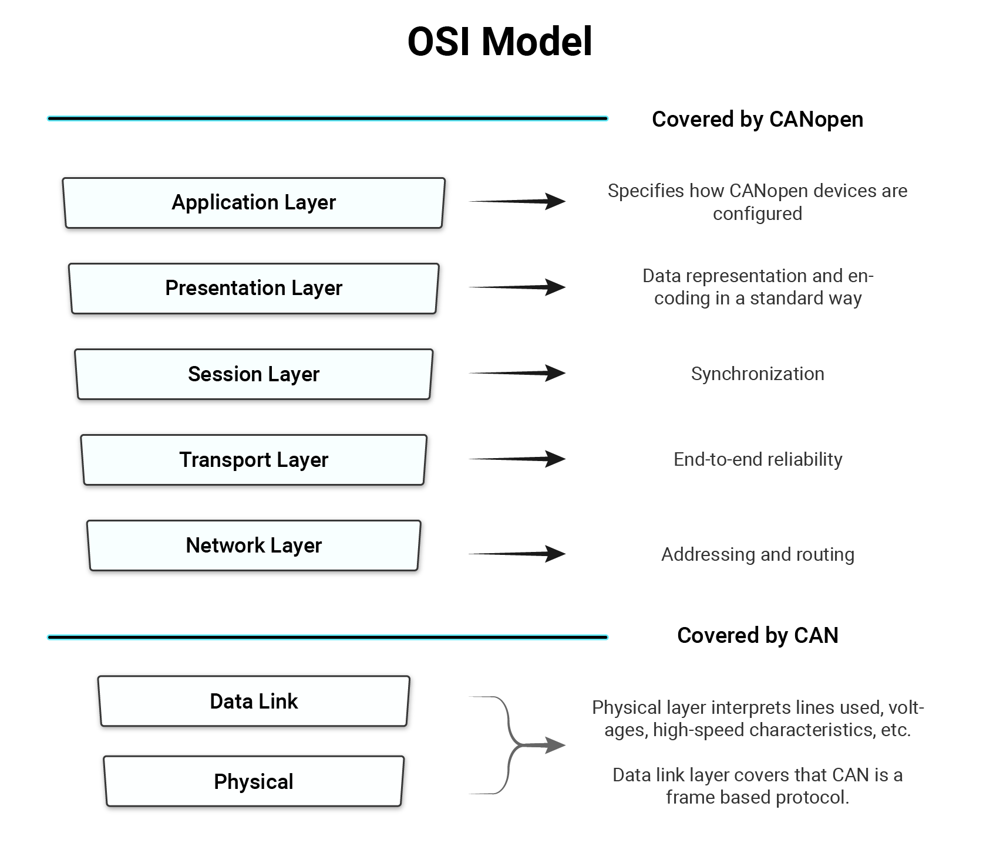
CANopen从应用端到CAN总线的结构如下图x所示：
- 应用层(Application)
- 用于实现各种应用对象
- 对象字典(Object dictionary)
- 用于描述CANopen节点设备的参数
- 通信接口(Communication interface)
- 定义了CANopen协议通信规则以及CAN控制器驱动之间对应关系
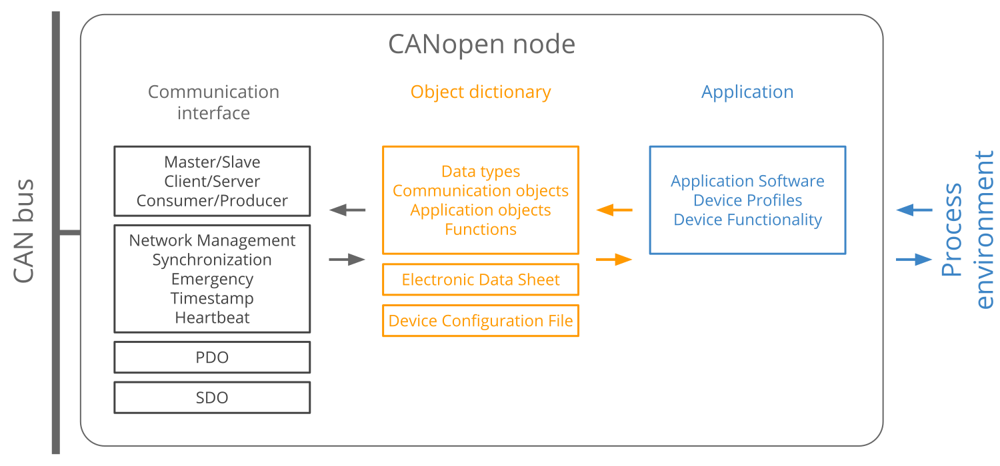
在CANopen网络中，通常需要多个设备进行通信，在CANopen网络中用到了如下三种通信模型：
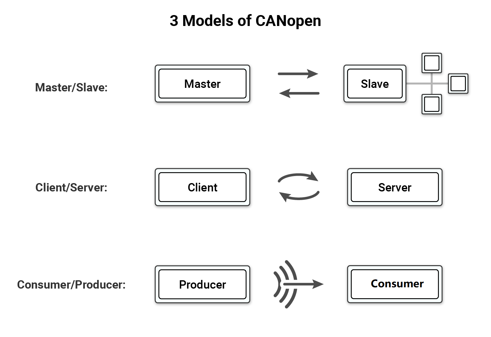
- 主机/从机模型(Master/Salve)
- 一个节点(例如控制接口)充当应用程序主机控制器，从机(例如伺服电机)发送/请求数据，一般在诊断或状态管理中使用。
- 通信样例：NMT主机与NMT从机的通信
- 所有节点通信地位平等，运行时允许自行发送报文，但CANopen网络为了稳定可靠可控，都需要设置一个网络管理主机 NMT-Master。
- NMT主机一般是CANopen网络中具备监控的PLC或者PC(当然也可以是一般的功能节点)，所以也称为CANopen主站。相对应的其他CANopen节点就是NMT从机(NMT-slaves)。
- 客户端/服务端模型(Client/Server)
- 客户机向服务器发送数据请求，服务器进行响应。例如，当应用程序主机需要来自从机OD的数据时使用。
- 通信样例：SDO客户端与SDO服务端的通信
- 发送节点需要指定接收节点的地址(Node-ID)回应CAN报文来确认已经接收，如果超时没有确认，则发送节点将会重新发送原报文。
- 生产者/消费者模型(Producer/Consumer)
- 生产者节点向网络广播数据，而网络由使用者节点使用。生产者可以根据请求发送此数据，也可以不发送特定请求。
- 通信样例：心跳生产者与心跳消费者的通信
- 单向发送传输，无需接收节点回应CAN报文来确认。
CANopen的COB-ID¶
- 11位CAN ID在CANopen中被称为COB-ID，这11位COB-ID被分为两部分：前4位是功能码，后7位是(节点ID)，且7位的节点ID限制了CANopen网络上的设备数量为127个节点。
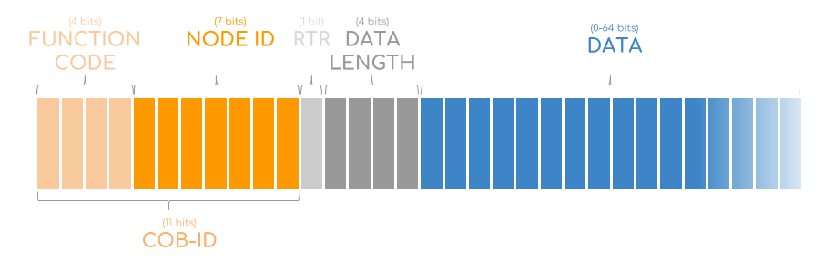
CANopen的7种报文类型¶
-
NMT(Network Management)
- 控制CANopen设备状态，用于网络管理。
-
SYNC(Synchronization)
- SYNC 消息用于同步多个 CANopen 设备的输入感应和驱动——通常由应用程序 Master 触发。
-
EMCY(Emergency)
- 在设备发生错误(例如传感器故障)时使用的，发送设备内部错误代码。
-
TIME
- 用于分配网络时间，采用广播方式，无需节点应答，CAN-ID 为 100h，数据长度为 6，数据为当前时刻与1984年1月1日0时的时间差。节点将此时间存储在对象字典1012h的索引中。
-
PDO(Process Data Object)
- PDO服务用于在设备之间传输实时数据，例如测量数据(如位置数据)或命令数据(如扭矩请求)。
-
SDO(Sever Data Object)
- 用于访问/更改CANopen设备的对象字典中的值——例如，当应用程序主机需要更改CANopen设备的某些配置时。
- Heartbeat
- Heartbeat服务有两个用途: 提供“活动”消息和确认NMT命令。
OD(Object Dictionary，对象字典)¶
-
什么是对象字典？
- 对象字典是一个标准的数据结构，描述了CANopen节点的不同的对象参数特性。
- 每个CANopen节点都包含一个对象字典，使用ESD文件来记录节点参数。
- Master节点可通过SDO(且只能通过SDO)来访问和配置Slave节点的对象字典。
-
对象字典中每个对象的构成
- Index (索引)：16位对象的基地址，其范围在0x0000到0xFFFF之间。
- Sub Index (子索引)：为了避免数据大量时无索引可分配，所以在某些索引下也定义了一个8位的索引值，其范围是0x00到0xFF 之间。
- Object name (对象名称): 如：制造商设备名称。
- Object type(目标类型): 变量、数组或记录。
- Data type (数据类型): 例如 字符串类型, UNSIGNED32类型UNSIGNED16类型。
- Access (访问权限)：rw (read/write), ro (read-only), wo (write-only)。
- Default Value(默认值):
- Category (类型)：指定此参数是否为强制/可选(M/O)。
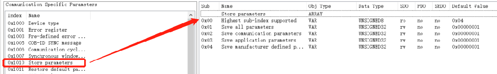
-
EDS(The Electronic Data Sheet)
- 在实际使用中，配置或管理复杂的 CANopen 网络将使用软件工具来完成，CiA 306标准定义了一个人类可读的且对机器友好的出厂文件格式即EDS格式文件，作为设备OD的“模板”。EDS文件通常由设备供应商提供，包含所有设备对象(但不包含参数值)的信息。简而言之，EDS是由CANopen设备厂商提供的不带参数的设备OD模板。
-
对象字典编辑器
- 对象字典编辑器是用于CANopen对象字典、设备信息等的GUI编辑器，可将 EDS 格式文件导入，通过编辑器编辑赋值后导出成 CANopen对象字典的C源代码文件。导出的在两个源代码文件CO_OD.c和CO_OD.h文件就是我们最终在软件开发时需要的对象字典源文件。
CANopen主站和从站¶
具有网络管理（Network Management：简称NMT）主机功能的设备通常被称为CANopen主站设备，通常也具有服务数据（Service Date Object：简称SDO）客户端功能。反之具有网络管理（NMT）从机功能的设备通常被称为CANopen从站设备，且其必须具备有服务数据服务器功能。这样CANopen主站设备就可以控制从站以及读写CANopen从站设备的对象字典。
- CANopen从站特性
- CANopen从站在CANopen网络中拥有唯一的节点地址，并且能独立完成特定的功能，例如数据采集、电机控制等等。对实时性要求高的数据，通常通过实时数据过程（Process Data Object：简称PDO）进行传输，因此CANopen从站应当支持一定数量的PDO传输功能。根据CANopen协议DS301 V4.02的定义，每个从站都预定义了4个TPDO（Transmit Process Data Object：简称TPDO）和4个RPDO（Receive Process Data Object），另外从站也应具有节点/寿命保护或心跳报文以及生产紧急报文等功能。每个CANopen从站都应有一个对象字典，描述了从站所具有的应用参数和通信参数。
- CANopen主站特性
- CANopen主站在网络所起的作用有别于CANopen从站，通常CANopen主站在网络中负责网络管理、从站参数配置以及从站数据的处理，其并不一定具有特定的功能，但也有自己的对象字典和唯一的节点地址，一般是CANopen网络中具备监控的PLC或者PC(当然也可以是一般的功能节点)。
CANopen网络组建¶
由于CANopen是基于CAN总线的一种应用层协议，因此其网络组建与CAN总线一致，典型的总线型结构，从站和主站都挂接在该总线上即可，在一个CANopen网络中只能有一个主站设备和若干个从站设备同时工作。CANopen网络布线时选用带屏蔽双绞线，提高总线抗干扰能力。表 x 所示为CAN通信比特率与总线长度的关系。
表 x
| Bit rate | Bus length |
|---|---|
| 1 Mbit/s | 25 m |
| 800 kbit/s | 50 m |
| 500 kbit/s | 100 m |
| 250 kbit/s | 250 m |
| 125 kbit/s | 500 m |
| 50 kbit/s | 1.000 m |
| 20 kbit/s | 2.500 m |
| 10 kbit/s | 5.000 m |
注意：
- 总线长度的估计是基于CANopen CiA 301 规范建议的采样点位置。
- 总线长度的估计是基于5 ns/m的传播延迟。此外，还需要考虑所用的CAN控制器、CAN收发器和光耦合器的延迟时间。
如图x所示为CANopen网络的基本结构，在该网络中有一个CANopen主站，负责管理网络中的所有从站，每个设备都有一个独立的节点地址（NodeID）。从站与从站之间也能建立通信，通常需要事先对各个从站进行配置，使各个从站之间能够建立起独立的PDO通信。
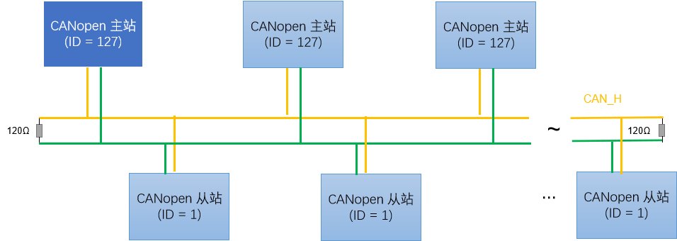
图x所示为带有网关设备的CANopen网络，与基本的CANopen网络相比，该网络中增加了一个CANopen网关设备，该网关设备可以是CANopen转DeviceNet、Profibus、Modbus或其它的设备。在CANopen网络中，我们也可把该网关设备作为一个从站设备或者是CANopen主站设备。
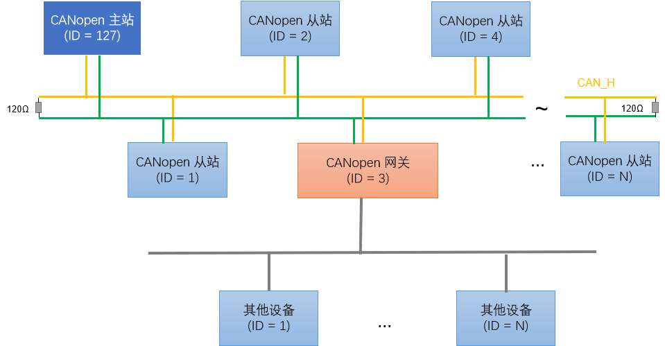
NMT网络管理¶
为实现CANopen网络稳定可靠高效运行，需要对CANopen网络进行网络管理，NMT主机通过下发命令，来控制NMT从机进行有序工作，故每个CANopen协议栈中都具有NMT网络管理的功能。
- CANopen节点设备运行时存在六种状态：
- 初始化
- 节点上电后对功能部件包括CAN控制器进行初始化。
- 应用层复位
- 节点中的应用程序复位（开始），比如开关量输出、模拟量输出的初始值。
- 会话层复位
- 节点中的CANopen通讯复位（开始），从这个时刻起，此节点就可以进行CANopen通讯了。
- 预操作状态
- 节点的CANopen通讯处于操作就绪状态，此时此节点不能进行PDO通信，而可以进行SDO进行参数配置和NMT网络管理的操作。
- 操作状态
- 节点收到NMT主机发来的启动命令后，CANopen通讯被激活，PDO通信启动后，按照对象字典里面规定的规则进行传输，同样SDO也可以对节点进行数据传输和参数修改。
- 停止状态
- 节点收到NMT主机发来的停止命令后，节点的PDO通信被停止，但SDO和NMT网络管理依然可以对节点进行操作。
- 初始化
如下图x所示，上述六种状态中除了初始化状态外，都可以通过NMT主机发送NMT命令让CANopen网络中任意一个节点进行其他5种状态的切换。
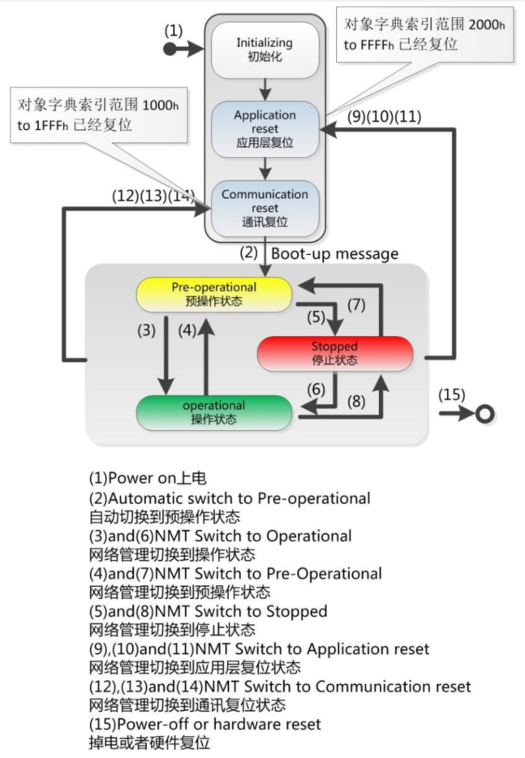
CANopenNode简介¶
CANopenNode是一款免费和开源的CANopen协议栈，使用用ANSI C语言以面向对象的方式编写的。它可以在不同的微控制器上运行，作为独立的应用程序或与RTOS一起运行。
变量（通信、设备、自定义）被收集在CANopen对象字典中，并且可以以两种方式修改：C源代码和CANopen网络。
CANopenNode的主页是位于：https://github.com/CANopenNode/CANopenNode
CANopenNode vs CAN Festival¶
表 x
| Feature | CANopenNode | CANFestival |
|---|---|---|
| License | Apache v2.0 | LGPLv2 |
| NMT master / slave | ✓ / ✓ | ✓ / ✓ |
| SDO client / server | ✓ / ✓ | ✓ / ✓ |
| PDO | ✓ / ✓ | ✓ / ✓ |
| 紧急报文 | ✓ / ✓ | ✓ / ✓ |
| LLS | ✓ | ✓ |
| Non-volatile storage support | × | ✓ |
CANFestival和CANopenNode都是用于在嵌入式系统上实现CANopen协议通信的开源软件协议栈。需要注意的是它们使用了不同的开放程度的开源协议。CANFestival使用LGPLv2开源协议。这意味着CANFestival的源代码是免费提供的，任何人都可以使用、修改和分发，只要任何衍生作品使用相同的GPL许可证。如果一个公司在产品中使用CANFestival，他们也必须按照同样的LGPLv2开源协议提供其产品的源代码。CANopenNode使用 Apache v2.0开源协议。这是一个自由度比LGPLv2更为开发的一个开源协议，允许在使用软件方面有更大的灵活性。任何人都可以使用、修改和发布CANopenNode，甚至用于商业目的，而不需要发布其衍生作品的源代码。
获取CANopenNode源码¶
选择 CANopenNode v1.3，该版本为CANopenNode官方验证发布版本，获取源码链接如下：https://github.com/CANopenNode/CANopenNode/releases/tag/v1.3
CANopenNode 功能特性¶
- 支持启动、停止、重启设备的NMT从机和简单的NMT主机。
- 支持基于生产者消费者模型的心跳机制用于错误控制。
- 支持用于快速交换过程变量的PDO链接和动态映射。
- 支持SDO加速、分段和块状传输，用于对所有参数的服务访问以及SDO主机。
- 支持紧急报文。
- 支持基于生产者消费者模型的同步机制。
- 支持时间协议(生产者消费者模式)。
- 支持非易失性存储（掉电保存）。
- 支持LSS主机和从机, LSS 快速扫描。
如CANopenNode官方README文档给出的那样，CANopenNode分为三个线程进行运行，分别为：
- 主线程
- 负责处理大部分协议栈相关函数。
- 定时中断线程
- 1ms执行一次，负责处理和时间相关的任务。
- CAN接收线程
- 当接收到CAN帧时进入到这里并处理。
-----------------------
| Program start |
-----------------------
|
-----------------------
| CANopen init |
-----------------------
|
-----------------------
| Start threads |
-----------------------
| | |
-------------------- | --------------------
| | |
----------------------- ----------------------- -----------------------
| CAN receive thread | | Timer interval thread | | Mainline thread |
| | | | | |
| - Fast response. | | - Realtime thread with| | - Processing of time |
| - Detect CAN ID. | | constant interval, | | consuming tasks |
| - Partially process | | typically 1ms. | | in CANopen objects: |
| messages and copy | | - Network synchronized| | - SDO server, |
| data to target | | - Copy inputs (RPDOs, | | - Emergency, |
| CANopen objects. | | HW) to Object Dict. | | - Network state, |
| | | - May call application| | - Heartbeat. |
| | | for some processing.| | - May cyclically call |
| | | - Copy variables from | | application code. |
| | | Object Dictionary to| | |
| | | outputs (TPDOs, HW).| | |
----------------------- ----------------------- -----------------------
-----------------------
| SDO client (optional) |
| |
| - Can be called by |
| external application|
| - Can read or write |
| any variable from |
| Object Dictionary |
| from any node in the|
| CANopen network. |
-----------------------
-----------------------
| LSS client (optional) |
| |
| - Can be called by |
| external application|
| - Can do LSS requests |
| - Can request node |
| enumeration |
-----------------------
CANopenNode Basic API List¶
initialize CANopen
- CO_ReturnError_t CO_init(void *CANdriverState, uint8_t nodeId, uint16_t bitRate)
- Initialize CANopen stack. Function must be called in the communication reset section.
Start CAN
- void CO_CANsetNormalMode(CO_CANmodule_t *CANmodule)
- Request CAN normal (opearational) mode
CANopen process
- CO_NMT_reset_cmd_t CO_process(CO_t *co, uint16_t timeDifference_ms, uint16_t *timerNext_ms)
- Process CANopen objects. Function must be called cyclically. It processes all "asynchronous" CANopen objects.
Process Sync
- bool_t CO_process_SYNC( CO_t *co, uint32_t timeDifference_us)
- Process CANopen SYNC objects. Function must be called cyclically from real time thread with constant interval (1ms typically). It processes SYNC CANopen objects.
Read inputs
- void CO_process_RPDO(CO_t *co, bool_t syncWas)
- Process CANopen RPDO objects. Function must be called cyclically from real time thread with constant. interval (1ms typically). It processes receive PDO CANopen objects.
Write outputs
- void CO_process_TPDO(CO_t *co, bool_t syncWas, uint32_t timeDifference_us)
- Process CANopen TPDO objects. Function must be called cyclically from real time thread with constant. interval (1ms typically). It processes transmit PDO CANopen objects.
CAN interrupt function
- void CO_CANinterrupt(CO_CANmodule_t *CANmodule)
- Receives and transmits CAN messages. Function must be called directly from high priority CAN interrupt.
CANopenNode的移植方法¶
CANopenNode移植中涉及到三个文件需要修改：
- CANopenNode-1.3/example/main.c 文件。
- CANopenNode-1.3/stack/drvTemplate/CO_driver.c 文件。
- CANopenNode-1.3/stack//drvTemplate/CO_driver_target.h 文件。
其中：
-
在 mian.c 文件中实现 tmrTask_thread() 函数
- 通加载进入1ms 定时中断服务函数进行 1ms 定时的信息同步。
-
在 CO_driver.c 文件中实现 CO_CANmodule_init() 函数
- 用于对 MCU 中的 CAN 模块进行初始，并配置CAN报文的收发参数以及开启 flexcan 中断。
-
在 CO_driver.C 文件中实现 CO_CANinterrupt() 函数
- 用于实现接收和发送CAN信息。该功能从高优先级的CAN中断中直接调用。
-
在 CO_driver.C 文件中实现 CO_CANverifyErrorst() 函数
- 用于对 CAN 总线进行错误检测和上报。
移植目录与工程组织¶
建议目录结构¶
建议与当前 MM32F5370 代码库保持一致的目录结构：
mm32F5370/
└── 3rdPartySoftwarePorting/
└── CANopenNode/
├── CANopenNode-1.3/ # CANopenNode 原始源码（不修改）
│ ├── CANopen.c
│ ├── CANopen.h
│ ├── CO_driver.h
│ ├── stack/ # 协议栈核心文件
│ │ ├── CO_Emergency.c
│ │ ├── CO_NMT_Heartbeat.c
│ │ ├── CO_PDO.c
│ │ ├── CO_SDO.c
│ │ └── ...
│ └── example/ # 官方示例参考
│
└── Demos/
└── CANopen_Basic/ # 移植后的示例工程（在此工作）
├── MDK-ARM/ # Keil工程文件
│ └── CANopen_Basic.uvprojx
│
├── main.c # 主入口
├── main.h
├── canopen_basic.c # CANopen应用实现
├── canopen_basic.h
├── platform.c # 平台初始化（LED/UART等）
├── platform.h
├── mm32f5370_it.c # 中断服务程序
├── mm32f5370_it.h
│
├── CO_driver.c # 【关键】FlexCAN驱动实现
├── CO_driver_target.h # 【关键】目标平台配置
│
├── CO_OD.c # 对象字典实现
├── CO_OD.h # 对象字典定义
├── IO.eds # EDS设备描述文件
└── IO.html # 对象字典文档
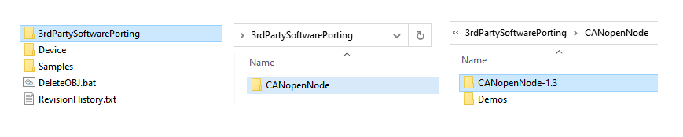
工程文件分类说明¶
CANopen_Basic 至少包含三类文件：
- 协议栈核心文件：
CANopen.c/.h+stack/目录文件（官方源码，不修改） - 驱动适配文件：
CO_driver.c、CO_driver_target.h（需要移植实现） - 应用与对象字典：
canopen_basic.c/.h、CO_OD.c/.h、IO.eds（应用相关）
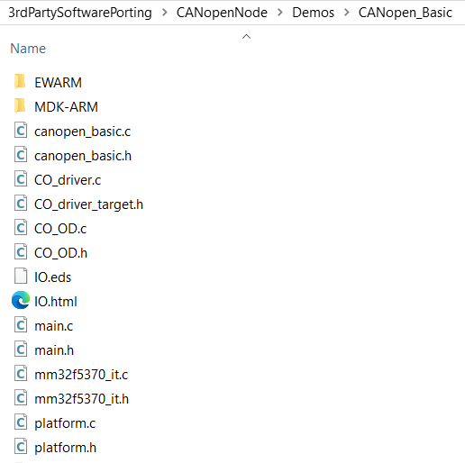
Keil工程配置¶
创建新工程¶
- 打开 Keil MDK，选择 Project → New μVision Project
- 选择设备：MindMotion → MM32F5 Series → MM32F5375G8PV
- 勾选 CMSIS → CORE 和 Device → Startup
添加源文件分组¶
建议按以下方式组织文件组：
Project
├── 📁 APP
│ ├── main.c
│ ├── canopen_basic.c
│ └── platform.c
│ ├── CO_driver.c # 移植文件
│ ├── CO_OD.c
├── 📁 CANopenNode
│ ├── CANopen.c
│ └── (其他stack文件...)
├── 📁 HAL_Library
│ └── (MM32 HAL库文件...)
└── 📁 Startup
├── system_mm32f5370.c
└── startup_mm32f5370_keil.s
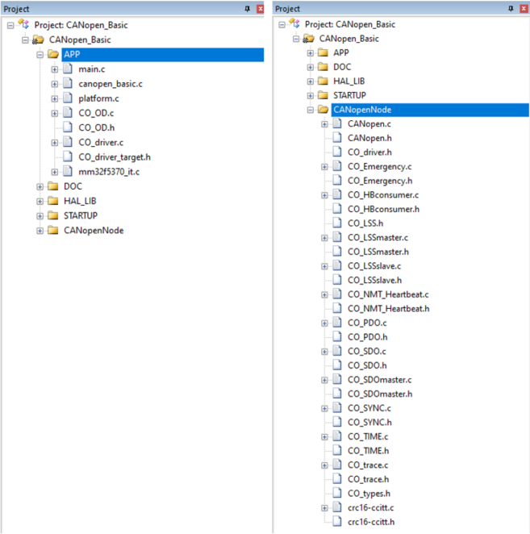
头文件包含路径（Include Paths）¶
在项目选项 C/C++ → Include Paths 中添加：
..\..\CANopen_Basic # 工程根目录
..\..\..\..\..\Device\CMSIS\Core\Include # CMSIS核心
..\..\..\..\..\Device\MM32F5370\HAL_Lib\inc # HAL库
..\..\..\..\..\Device\MM32F5370\Include # 设备头文件
..\..\..\CANopenNode-1.3 # 协议栈根目录
..\..\..\CANopenNode-1.3\stack # 协议栈核心
源文件列表¶
协议栈核心文件（必须添加）：
| 序号 | 文件路径 | 功能说明 |
|---|---|---|
| 1 | CANopenNode-1.3/CANopen.c |
CANopen主控模块 |
| 2 | CANopenNode-1.3/CO_driver.h |
驱动接口定义 |
| 3 | CANopenNode-1.3/CO_types.h |
类型定义 |
| 4 | CANopenNode-1.3/stack/CO_Emergency.c |
紧急报文处理 |
| 5 | CANopenNode-1.3/stack/CO_HBconsumer.c |
心跳消费 |
| 6 | CANopenNode-1.3/stack/CO_LSSmaster.c |
LSS主站 |
| 7 | CANopenNode-1.3/stack/CO_LSSslave.c |
LSS从站 |
| 8 | CANopenNode-1.3/stack/CO_NMT_Heartbeat.c |
NMT和心跳 |
| 9 | CANopenNode-1.3/stack/CO_PDO.c |
PDO处理 |
| 10 | CANopenNode-1.3/stack/CO_SDO.c |
SDO服务器 |
| 11 | CANopenNode-1.3/stack/CO_SDOmaster.c |
SDO客户端 |
| 12 | CANopenNode-1.3/stack/CO_SYNC.c |
SYNC同步 |
| 13 | CANopenNode-1.3/stack/CO_TIME.c |
TIME时间戳 |
| 14 | CANopenNode-1.3/stack/CO_trace.c |
跟踪功能 |
| 15 | CANopenNode-1.3/stack/crc16-ccitt.c |
CRC计算 |
说明： 先按完整列表纳入，跑通后再裁剪模块，避免早期裁剪导致问题定位困难。
编译选项配置¶
Target 选项卡：
- IROM1: 0x08000000, Size: 0x00080000 (512KB Flash)
- IRAM1: 0x20000000, Size: 0x00020000 (128KB SRAM)
C/C++ 选项卡：
- Define:
USE_STDPERIPH_DRIVER - Optimization: Level 2 (-O2) 或 Level 0 (-O0) 用于调试
- One ELF Section per Function: 勾选（减小代码体积）
Linker 选项卡：
- Use Memory Layout from Target Dialog: 勾选
- 或使用 Scatter File:
CANopenNode.icf(IAR) /.sct(Keil)
驱动层移植详解¶
本章是移植成败关键。推荐先将官方 drvTemplate 复制到工程，再按下述逻辑适配。
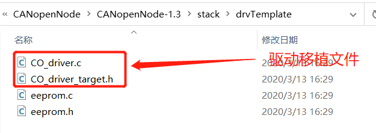
CO_driver_target.h 详细实现¶
这是目标平台配置文件，定义数据类型、临界区宏、CAN消息结构体等。
/**
* @file CO_driver_target.h
* @brief MM32F5370 FlexCAN 目标平台配置
* @note 基于 CANopenNode v1.3 驱动模板适配
*/
#ifndef CO_DRIVER_TARGET_H
#define CO_DRIVER_TARGET_H
#ifdef __cplusplus
extern "C" {
#endif
/* ===================== 1. 基础头文件包含 ===================== */
#include <stddef.h> /* for 'NULL' */
#include <stdint.h> /* for 'int8_t' to 'uint64_t' */
#include <stdbool.h> /* for 'true', 'false' */
#include "hal_conf.h" /* MM32 HAL库配置 */
#include "hal_flexcan.h" /* FlexCAN驱动 */
/* ===================== 2. 字节序配置 ===================== */
/**
* @note MM32F5370 使用小端模式 (Little Endian)
* CANopen协议本身也是小端模式
*/
#define CO_LITTLE_ENDIAN
/* ===================== 3. 临界区保护宏 ===================== */
/**
* @note 裸机环境下，这些宏可以置空
* 如果使用RTOS，需要替换为互斥锁或关中断操作
*
* 示例 (FreeRTOS):
* #define CO_LOCK_CAN_SEND() vTaskSuspendAll()
* #define CO_UNLOCK_CAN_SEND() xTaskResumeAll()
*/
#define CO_LOCK_CAN_SEND() /**< 锁定CAN发送临界区 */
#define CO_UNLOCK_CAN_SEND() /**< 解锁CAN发送临界区 */
#define CO_LOCK_EMCY() /**< 锁定紧急报文临界区 */
#define CO_UNLOCK_EMCY() /**< 解锁紧急报文临界区 */
#define CO_LOCK_OD() /**< 锁定对象字典访问 */
#define CO_UNLOCK_OD() /**< 解锁对象字典访问 */
/* ===================== 4. 内存屏障宏 ===================== */
/**
* @note 用于CAN接收缓冲区同步
* 在裸机环境下，这些宏通常为空
* 在需要严格内存顺序的多核或DMA场景下需要实现
*/
#define CANrxMemoryBarrier() /**< 内存屏障 */
#define IS_CANrxNew(rxNew) ((uintptr_t)(rxNew))
#define SET_CANrxNew(rxNew) { CANrxMemoryBarrier(); (rxNew) = (void*)1L; }
#define CLEAR_CANrxNew(rxNew) { CANrxMemoryBarrier(); (rxNew) = (void*)0L; }
/* ===================== 5. 数据类型定义 ===================== */
/**
* @brief CANopenNode 使用的数据类型
* @note 尽量使用 stdint.h 定义的标准类型
*/
typedef unsigned char bool_t; /**< 布尔类型 */
typedef float float32_t; /**< 32位浮点 */
typedef long double float64_t; /**< 64位浮点 */
typedef char char_t; /**< 字符类型 */
typedef unsigned char oChar_t; /**< 八进制字符 */
typedef unsigned char domain_t; /**< 域类型 */
/* ===================== 6. CAN接收消息结构体 ===================== */
/**
* @brief CAN接收消息结构
* @note 必须与底层FlexCAN接收帧字段对齐
*
* FlexCAN接收帧格式：
* - id: 标准ID位于 bits [31:21]
* - length: 数据长度 0-8
* - dataByte0-7: 数据字节
*/
typedef struct {
uint32_t ident; /**< CAN标识符 (11位标准ID) */
uint8_t DLC; /**< 数据长度代码 (0-8) */
uint8_t data[8]; /**< 8字节数据 */
} CO_CANrxMsg_t;
/* ===================== 7. 接收缓冲区结构体 ===================== */
/**
* @brief CAN接收缓冲区
* @note 每个CANopen通信对象使用一个接收缓冲区
*/
typedef struct {
uint16_t ident; /**< 标准CAN ID (bits 0-10) + RTR (bit 11) */
uint16_t mask; /**< 验收掩码 (与ident对齐方式相同) */
void *object; /**< 指向所有者对象的指针 */
void (*pFunct)(void *object, const CO_CANrxMsg_t *message); /**< 回调函数 */
} CO_CANrx_t;
/* ===================== 8. 发送缓冲区结构体 ===================== */
/**
* @brief CAN发送缓冲区
* @note 每个CANopen通信对象使用一个发送缓冲区
*/
typedef struct {
uint32_t ident; /**< CAN标识符 (与CAN模块对齐) */
uint8_t DLC; /**< 数据长度 */
uint8_t data[8]; /**< 数据字节 */
volatile bool_t bufferFull; /**< 前一消息仍在缓冲区中 */
volatile bool_t syncFlag; /**< 同步PDO标志，防止在同步窗外发送 */
bool rtr; /**< 远程传输请求 */
} CO_CANtx_t;
/* ===================== 9. CAN模块结构体 ===================== */
/**
* @brief CAN模块对象
* @note 包含CAN模块的所有状态和控制信息
*/
typedef struct {
void *CANdriverState; /**< 驱动状态指针 */
CO_CANrx_t *rxArray; /**< 接收缓冲区数组 */
uint16_t rxSize; /**< 接收缓冲区数量 */
CO_CANtx_t *txArray; /**< 发送缓冲区数组 */
uint16_t txSize; /**< 发送缓冲区数量 */
volatile bool_t CANnormal; /**< CAN模块处于正常模式 */
volatile bool_t useCANrxFilters;/**< 使用硬件接收过滤器 */
volatile bool_t bufferInhibitFlag; /**< 同步TPDO抑制标志 */
volatile bool_t firstCANtxMessage; /**< 第一个CAN消息(启动报文) */
volatile uint16_t CANtxCount; /**< 等待发送的消息数量 */
uint32_t errOld; /**< 上次CAN错误状态 */
void *em; /**< 紧急报文对象指针 */
} CO_CANmodule_t;
/* ===================== 10. 函数声明 ===================== */
/**
* @brief CAN中断处理函数
* @param CANmodule CAN模块指针
* @note 必须在FlexCAN中断服务程序中调用
*/
void CO_CANinterrupt(CO_CANmodule_t *CANmodule);
/**
* @brief FlexCAN底层发送函数
* @param buffer 发送缓冲区
* @return true-成功, false-失败
*/
bool flexcan_tx(CO_CANtx_t *buffer);
#ifdef __cplusplus
}
#endif
#endif /* CO_DRIVER_TARGET_H */
CO_driver.c 详细实现¶
这是驱动实现文件，包含FlexCAN硬件初始化、收发函数、中断处理等。
/**
* @file CO_driver.c
* @brief MM32F5370 FlexCAN 驱动实现
* @note 基于 CANopenNode v1.3 驱动模板适配
*/
#include "CO_driver.h"
#include "CO_Emergency.h"
#include "hal_conf.h"
/* ===================== 1. 宏定义 ===================== */
#define BOARD_FLEXCAN_RX_MB_STATUS (1U << 0) /**< MB0用于接收中断 */
#define BOARD_FLEXCAN_TX_MB_STATUS (1U << 2) /**< MB2用于发送中断 */
#define BOARD_FLEXCAN_TX_MB_CH 2 /**< 发送MB通道号 */
#define BOARD_FLEXCAN_RX_MB_CH 0 /**< 接收MB通道号 */
#define BOARD_FLEXCAN_PORT FLEXCAN1 /**< FlexCAN实例 */
/* ===================== 2. 全局变量 ===================== */
flexcan_handle_t FlexCAN_Handle; /**< FlexCAN句柄 */
flexcan_frame_t FlexCAN_MB0_FrameStruct; /**< MB0帧结构体 */
flexcan_mb_transfer_t FlexCAN_MB0_TransferStruct;/**< MB0传输结构体 */
uint8_t FlexCAN_MB0_RxCompleteFlag = 0; /**< 接收完成标志 */
flexcan_frame_t FlexCAN_MBTemp_FrameStruct; /**< 临时帧缓存，用于中断处理 */
/* ===================== 3. 模式设置函数 ===================== */
/**
* @brief 设置CAN配置模式
* @param CANdriverState 驱动状态指针
* @note 在FlexCAN中，初始化时自动进入冻结模式，此函数可留空
*/
void CO_CANsetConfigurationMode(void *CANdriverState)
{
(void)CANdriverState; /* 抑制未使用变量警告 */
}
/**
* @brief 设置CAN正常模式
* @param CANmodule CAN模块指针
* @note 设置标志位表示CAN已就绪，实际模式切换由HAL处理
*/
void CO_CANsetNormalMode(CO_CANmodule_t *CANmodule)
{
CANmodule->CANnormal = true;
}
/* ===================== 4. FlexCAN回调函数 ===================== */
/**
* @brief FlexCAN传输回调函数
* @param flex_can FlexCAN实例指针
* @param handle FlexCAN句柄
* @param status 传输状态
* @param result MB索引
* @param userData 用户数据
*
* @note 此函数在FlexCAN中断中被调用
* 当接收到消息时，将数据复制到临时缓冲区供CO_CANinterrupt处理
*/
void FlexCAN_Transfer_Callback(FLEXCAN_TypeDef *flex_can,
flexcan_handle_t *handle,
uint32_t status,
uint32_t result,
void *userData)
{
(void)flex_can;
(void)handle;
(void)userData;
switch (status)
{
case Status_Flexcan_RxIdle:
/* 接收完成，MB索引为0 */
if (0 == result)
{
FlexCAN_MB0_RxCompleteFlag = 1;
/* 重新启动非阻塞接收，准备接收下一帧 */
FLEXCAN_TransferReceiveNonBlocking(FLEXCAN1, &FlexCAN_Handle,
&FlexCAN_MB0_TransferStruct);
}
/* 复制接收到的数据到临时缓冲区
* 注意：这里只是复制，实际处理在CO_CANinterrupt中完成
* 这样可以避免在中断中执行过多操作
*/
if (FlexCAN_MB0_RxCompleteFlag == 1)
{
FlexCAN_MBTemp_FrameStruct.id = FlexCAN_MB0_FrameStruct.id;
FlexCAN_MBTemp_FrameStruct.length = FlexCAN_MB0_FrameStruct.length;
FlexCAN_MBTemp_FrameStruct.dataByte0 = FlexCAN_MB0_FrameStruct.dataByte0;
FlexCAN_MBTemp_FrameStruct.dataByte1 = FlexCAN_MB0_FrameStruct.dataByte1;
FlexCAN_MBTemp_FrameStruct.dataByte2 = FlexCAN_MB0_FrameStruct.dataByte2;
FlexCAN_MBTemp_FrameStruct.dataByte3 = FlexCAN_MB0_FrameStruct.dataByte3;
FlexCAN_MBTemp_FrameStruct.dataByte4 = FlexCAN_MB0_FrameStruct.dataByte4;
FlexCAN_MBTemp_FrameStruct.dataByte5 = FlexCAN_MB0_FrameStruct.dataByte5;
FlexCAN_MBTemp_FrameStruct.dataByte6 = FlexCAN_MB0_FrameStruct.dataByte6;
FlexCAN_MBTemp_FrameStruct.dataByte7 = FlexCAN_MB0_FrameStruct.dataByte7;
}
break;
case Status_Flexcan_TxIdle:
/* 发送完成，在CO_CANinterrupt中处理后续操作 */
break;
case Status_Flexcan_TxSwitchToRx:
/* 发送后自动接收（远程帧响应），本示例未使用 */
break;
default:
break;
}
}
/* ===================== 5. FlexCAN硬件初始化 ===================== */
/**
* @brief FlexCAN硬件初始化
* @param can_bitrate CAN波特率，单位kbps (如125, 250, 500, 1000)
*
* @note 配置流程：
* 1. 使能时钟
* 2. 配置GPIO复用
* 3. 配置中断
* 4. 初始化FlexCAN模块
* 5. 配置消息缓冲区(MB)
* 6. 启动接收
*/
void FlexCAN_Configure(uint32_t can_bitrate)
{
GPIO_InitTypeDef GPIO_InitStruct;
NVIC_InitTypeDef NVIC_InitStruct;
RCC_ClocksTypeDef RCC_Clocks;
flexcan_config_t FlexCAN_ConfigStruct;
flexcan_rx_mb_config_t FlexCAN_RxMB_ConfigStruct;
/* 获取系统时钟频率 */
RCC_GetClocksFreq(&RCC_Clocks);
/* 1. 使能FlexCAN和GPIO时钟 */
RCC_APB1PeriphClockCmd(RCC_APB1Periph_FLEXCAN1, ENABLE);
RCC_AHBPeriphClockCmd(RCC_AHBPeriph_GPIOD, ENABLE);
/* 2. 配置引脚复用: PD8-RX, PD9-TX (AF25) */
GPIO_PinAFConfig(GPIOD, GPIO_PinSource8, GPIO_AF_25);
GPIO_PinAFConfig(GPIOD, GPIO_PinSource9, GPIO_AF_25);
/* 配置RX引脚 - 浮空输入 */
GPIO_StructInit(&GPIO_InitStruct);
GPIO_InitStruct.GPIO_Pin = GPIO_Pin_8;
GPIO_InitStruct.GPIO_Speed = GPIO_Speed_High;
GPIO_InitStruct.GPIO_Mode = GPIO_Mode_FLOATING;
GPIO_Init(GPIOD, &GPIO_InitStruct);
/* 配置TX引脚 - 复用推挽 */
GPIO_StructInit(&GPIO_InitStruct);
GPIO_InitStruct.GPIO_Pin = GPIO_Pin_9;
GPIO_InitStruct.GPIO_Speed = GPIO_Speed_High;
GPIO_InitStruct.GPIO_Mode = GPIO_Mode_AF_PP;
GPIO_Init(GPIOD, &GPIO_InitStruct);
/* 3. 配置NVIC中断 */
NVIC_InitStruct.NVIC_IRQChannel = FLEXCAN1_IRQn;
NVIC_InitStruct.NVIC_IRQChannelPreemptionPriority = 0; /* 高优先级（示例与TIM1同级） */
NVIC_InitStruct.NVIC_IRQChannelSubPriority = 0; /* 高优先级 */
NVIC_InitStruct.NVIC_IRQChannelCmd = ENABLE;
NVIC_Init(&NVIC_InitStruct);
/* 4. FlexCAN默认配置 */
FLEXCAN_GetDefaultConfig(&FlexCAN_ConfigStruct);
FlexCAN_ConfigStruct.baudRate = can_bitrate * 1000U; /* 转换为Hz */
FlexCAN_ConfigStruct.clkSrc = Enum_Flexcan_ClkSrc1; /* 使用PCLK1 */
FlexCAN_ConfigStruct.enableLoopBack = false; /* 关闭回环模式 */
FlexCAN_ConfigStruct.disableSelfReception = true; /* 禁用自接收 */
FlexCAN_ConfigStruct.enableIndividMask = true; /* 使能独立掩码 */
/* 自动计算CAN时序参数
* 使用FlexCAN提供的算法，根据波特率和CAN时钟计算最优的
* 预分频器、传播段、相位段等参数
*/
FLEXCAN_CalculateImprovedTimingValues(FlexCAN_ConfigStruct.baudRate,
RCC_Clocks.PCLK1_Frequency,
&FlexCAN_ConfigStruct.timingConfig);
/* 初始化FlexCAN模块 */
FLEXCAN_Init(FLEXCAN1, &FlexCAN_ConfigStruct);
/* 5. 配置发送MB (MB2) */
FLEXCAN_TxMbConfig(FLEXCAN1, BOARD_FLEXCAN_TX_MB_CH, ENABLE);
/* 创建FlexCAN句柄并注册回调函数 */
FLEXCAN_TransferCreateHandle(FLEXCAN1, &FlexCAN_Handle,
FlexCAN_Transfer_Callback, NULL);
/* 配置接收MB (MB0)
* 初始ID设为0x222，实际使用时会通过对象字典配置覆盖
*/
FlexCAN_RxMB_ConfigStruct.id = FLEXCAN_ID_STD(0x222);
FlexCAN_RxMB_ConfigStruct.format = Enum_Flexcan_FrameFormatStandard;
FlexCAN_RxMB_ConfigStruct.type = Enum_Flexcan_FrameTypeData;
FLEXCAN_RxMbConfig(FLEXCAN1, BOARD_FLEXCAN_RX_MB_CH,
&FlexCAN_RxMB_ConfigStruct, ENABLE);
/* 设置接收掩码 - 接收所有标准帧 (掩码0x000表示不过滤) */
FLEXCAN_SetRxIndividualMask(FLEXCAN1, BOARD_FLEXCAN_RX_MB_CH,
FLEXCAN_RX_MB_STD_MASK(0x000, 0, 0));
/* 6. 准备接收缓冲区结构体 */
FlexCAN_MB0_FrameStruct.length = 8U;
FlexCAN_MB0_FrameStruct.type = (uint8_t)Enum_Flexcan_FrameTypeData;
FlexCAN_MB0_FrameStruct.format = (uint8_t)Enum_Flexcan_FrameFormatStandard;
FlexCAN_MB0_FrameStruct.id = FLEXCAN_ID_STD(0x222);
FlexCAN_MB0_TransferStruct.mbIdx = BOARD_FLEXCAN_RX_MB_CH;
FlexCAN_MB0_TransferStruct.frame = &FlexCAN_MB0_FrameStruct;
/* 启动非阻塞接收，准备接收数据 */
FLEXCAN_TransferReceiveNonBlocking(FLEXCAN1, &FlexCAN_Handle,
&FlexCAN_MB0_TransferStruct);
}
/* ===================== 6. CANopen驱动接口实现 ===================== */
/**
* @brief 初始化CAN模块
* @param CANmodule CAN模块结构体指针
* @param CANdriverState 驱动状态指针
* @param rxArray 接收缓冲区数组
* @param rxSize 接收缓冲区数量
* @param txArray 发送缓冲区数组
* @param txSize 发送缓冲区数量
* @param CANbitRate CAN波特率(kbps)
* @return CO_ERROR_NO 成功，其他错误码
*/
CO_ReturnError_t CO_CANmodule_init(
CO_CANmodule_t *CANmodule,
void *CANdriverState,
CO_CANrx_t rxArray[],
uint16_t rxSize,
CO_CANtx_t txArray[],
uint16_t txSize,
uint16_t CANbitRate)
{
uint16_t i;
/* 参数检查 */
if(CANmodule == NULL || rxArray == NULL || txArray == NULL){
return CO_ERROR_ILLEGAL_ARGUMENT;
}
/* 初始化模块结构体 */
CANmodule->CANdriverState = CANdriverState;
CANmodule->rxArray = rxArray;
CANmodule->rxSize = rxSize;
CANmodule->txArray = txArray;
CANmodule->txSize = txSize;
CANmodule->CANnormal = false;
CANmodule->useCANrxFilters = false; /* 不使用硬件过滤器，使用软件过滤 */
CANmodule->bufferInhibitFlag = false;
CANmodule->firstCANtxMessage = true;
CANmodule->CANtxCount = 0U;
CANmodule->errOld = 0U;
CANmodule->em = NULL;
/* 初始化接收缓冲区 */
for(i = 0U; i < rxSize; i++){
rxArray[i].ident = 0U;
rxArray[i].mask = 0xFFFFU; /* 初始掩码：全匹配 */
rxArray[i].object = NULL;
rxArray[i].pFunct = NULL;
}
/* 初始化发送缓冲区 */
for(i = 0U; i < txSize; i++){
txArray[i].bufferFull = false;
}
/* 配置FlexCAN硬件 */
FlexCAN_Configure(CANbitRate);
return CO_ERROR_NO;
}
/**
* @brief 禁用CAN模块
* @param CANmodule CAN模块指针
*/
void CO_CANmodule_disable(CO_CANmodule_t *CANmodule)
{
CANmodule->CANnormal = false;
/* 可以在这里添加关闭FlexCAN的代码 */
}
/**
* @brief 读取接收消息的标识符
* @param rxMsg 接收消息指针
* @return 11位标准ID
*/
uint16_t CO_CANrxMsg_readIdent(const CO_CANrxMsg_t *rxMsg)
{
return (uint16_t)rxMsg->ident;
}
/**
* @brief 初始化接收缓冲区
* @param CANmodule CAN模块指针
* @param index 缓冲区索引
* @param ident CAN标识符
* @param mask 验收掩码
* @param rtr 远程帧标志
* @param object 所有者对象指针
* @param pFunct 回调函数指针
* @return 错误码
*
* @note 此函数由各个CANopen模块调用，注册自己的接收缓冲区
*/
CO_ReturnError_t CO_CANrxBufferInit(
CO_CANmodule_t *CANmodule,
uint16_t index,
uint16_t ident,
uint16_t mask,
bool_t rtr,
void *object,
void (*pFunct)(void *object, const CO_CANrxMsg_t *message))
{
CO_ReturnError_t ret = CO_ERROR_NO;
if((CANmodule != NULL) && (object != NULL) &&
(pFunct != NULL) && (index < CANmodule->rxSize))
{
CO_CANrx_t *buffer = &CANmodule->rxArray[index];
buffer->object = object;
buffer->pFunct = pFunct;
buffer->ident = ident & 0x07FFU; /* 保存11位ID */
if(rtr){
buffer->ident |= 0x0800U; /* bit 11 = RTR */
}
buffer->mask = (mask & 0x07FFU) | 0x0800U; /* 掩码包含RTR位 */
/* 注意：此处不配置硬件过滤器，所有消息都在软件中过滤 */
}
else{
ret = CO_ERROR_ILLEGAL_ARGUMENT;
}
return ret;
}
/**
* @brief 初始化发送缓冲区
* @param CANmodule CAN模块指针
* @param index 缓冲区索引
* @param ident CAN标识符
* @param rtr 远程帧标志
* @param noOfBytes 数据字节数
* @param syncFlag 同步标志
* @return 发送缓冲区指针
*/
CO_CANtx_t *CO_CANtxBufferInit(
CO_CANmodule_t *CANmodule,
uint16_t index,
uint16_t ident,
bool_t rtr,
uint8_t noOfBytes,
bool_t syncFlag)
{
CO_CANtx_t *buffer = NULL;
if((CANmodule != NULL) && (index < CANmodule->txSize)){
buffer = &CANmodule->txArray[index];
buffer->ident = ((uint32_t)ident & 0x07FFU);
buffer->DLC = noOfBytes;
buffer->rtr = rtr;
buffer->bufferFull = false;
buffer->syncFlag = syncFlag;
}
return buffer;
}
/**
* @brief FlexCAN底层发送函数
* @param buffer 发送缓冲区
* @return true-成功放入发送队列，false-发送队列满
*/
bool flexcan_tx(CO_CANtx_t *buffer)
{
bool status = false;
flexcan_frame_t FlexCAN_FrameStruct;
flexcan_mb_transfer_t FlexCAN_MB_TransferStruct;
/* 设置帧类型 */
if (!buffer->rtr){
FlexCAN_FrameStruct.type = (uint8_t)Enum_Flexcan_FrameTypeData;
}
else{
FlexCAN_FrameStruct.type = (uint8_t)Enum_Flexcan_FrameTypeRemote;
}
FlexCAN_FrameStruct.length = (uint8_t)buffer->DLC;
FlexCAN_FrameStruct.format = (uint8_t)Enum_Flexcan_FrameFormatStandard;
FlexCAN_FrameStruct.id = FLEXCAN_ID_STD(buffer->ident);
/* 复制数据到帧结构体 */
FlexCAN_FrameStruct.dataByte0 = buffer->data[0];
FlexCAN_FrameStruct.dataByte1 = buffer->data[1];
FlexCAN_FrameStruct.dataByte2 = buffer->data[2];
FlexCAN_FrameStruct.dataByte3 = buffer->data[3];
FlexCAN_FrameStruct.dataByte4 = buffer->data[4];
FlexCAN_FrameStruct.dataByte5 = buffer->data[5];
FlexCAN_FrameStruct.dataByte6 = buffer->data[6];
FlexCAN_FrameStruct.dataByte7 = buffer->data[7];
FlexCAN_MB_TransferStruct.mbIdx = BOARD_FLEXCAN_TX_MB_CH;
FlexCAN_MB_TransferStruct.frame = &FlexCAN_FrameStruct;
/* 非阻塞发送 */
if (Status_Flexcan_Success == FLEXCAN_TransferSendNonBlocking(
FLEXCAN1, &FlexCAN_Handle,
&FlexCAN_MB_TransferStruct))
{
status = true;
}
return status;
}
/**
* @brief CANopen发送函数
* @param CANmodule CAN模块指针
* @param buffer 发送缓冲区
* @return 错误码
*/
CO_ReturnError_t CO_CANsend(CO_CANmodule_t *CANmodule, CO_CANtx_t *buffer)
{
CO_ReturnError_t err = CO_ERROR_NO;
/* 检查缓冲区是否已满 */
if(buffer->bufferFull){
if(!CANmodule->firstCANtxMessage){
/* 不是第一个消息（启动报文）时记录溢出错误 */
CO_errorReport((CO_EM_t*)CANmodule->em, CO_EM_CAN_TX_OVERFLOW,
CO_EMC_CAN_OVERRUN, buffer->ident);
}
err = CO_ERROR_TX_OVERFLOW;
}
CO_LOCK_CAN_SEND();
bool tx_mb_status = flexcan_tx(buffer);
if(tx_mb_status == true){
/* 消息已成功放入发送队列 */
CANmodule->bufferInhibitFlag = buffer->syncFlag;
}
else{
/* 如果硬件忙，标记缓冲区等待中断发送 */
buffer->bufferFull = true;
CANmodule->CANtxCount++;
}
CO_UNLOCK_CAN_SEND();
return err;
}
/**
* @brief 清除挂起的同步PDO
* @param CANmodule CAN模块指针
*
* @note 当同步窗口时间过期时调用，中止同步TPDO的发送
*/
void CO_CANclearPendingSyncPDOs(CO_CANmodule_t *CANmodule)
{
uint32_t tpdoDeleted = 0U;
uint32_t mb_status = 0U;
CO_LOCK_CAN_SEND();
mb_status = FLEXCAN1->IFLAG1;
if((mb_status & FLEXCAN_IFLAG1_BUF0I) && CANmodule->bufferInhibitFlag){
CANmodule->bufferInhibitFlag = false;
tpdoDeleted = 1U;
}
if(CANmodule->CANtxCount != 0U){
uint16_t i;
CO_CANtx_t *buffer = &CANmodule->txArray[0];
for(i = CANmodule->txSize; i > 0U; i--){
if(buffer->bufferFull){
if(buffer->syncFlag){
buffer->bufferFull = false;
CANmodule->CANtxCount--;
tpdoDeleted = 2U;
}
}
buffer++;
}
}
CO_UNLOCK_CAN_SEND();
if(tpdoDeleted != 0U){
CO_errorReport((CO_EM_t*)CANmodule->em, CO_EM_TPDO_OUTSIDE_WINDOW,
CO_EMC_COMMUNICATION, tpdoDeleted);
}
}
/**
* @brief 验证CAN错误状态
* @param CANmodule CAN模块指针
*
* @note 定期调用此函数检查CAN错误计数器，更新错误状态
*/
void CO_CANverifyErrors(CO_CANmodule_t *CANmodule)
{
uint16_t rxErrors, txErrors, overflow;
CO_EM_t* em = (CO_EM_t*)CANmodule->em;
uint32_t err;
/* 读取FlexCAN错误计数器 */
rxErrors = (uint16_t)((FLEXCAN1->ECR & FLEXCAN_ECR_RXERRCNT_Msk) >>
FLEXCAN_ECR_RXERRCNT_Pos);
txErrors = (uint16_t)((FLEXCAN1->ECR & FLEXCAN_ECR_TXERRCNT_Msk) >>
FLEXCAN_ECR_TXERRCNT_Pos);
overflow = (uint16_t)((FLEXCAN1->ESR1 & FLEXCAN_ESR1_ERROVR_Msk) >>
FLEXCAN_ESR1_ERROVR_Pos);
err = ((uint32_t)txErrors << 16) | ((uint32_t)rxErrors << 8) | overflow;
if(CANmodule->errOld != err){
CANmodule->errOld = err;
if(txErrors >= 256U){ /* Bus Off状态 */
CO_errorReport(em, CO_EM_CAN_TX_BUS_OFF, CO_EMC_BUS_OFF_RECOVERED, err);
}
else{
CO_errorReset(em, CO_EM_CAN_TX_BUS_OFF, err);
if((rxErrors >= 96U) || (txErrors >= 96U)){ /* 总线警告 */
CO_errorReport(em, CO_EM_CAN_BUS_WARNING, CO_EMC_NO_ERROR, err);
}
if(rxErrors >= 128U){ /* RX被动错误 */
CO_errorReport(em, CO_EM_CAN_RX_BUS_PASSIVE, CO_EMC_CAN_PASSIVE, err);
}
else{
CO_errorReset(em, CO_EM_CAN_RX_BUS_PASSIVE, err);
}
if(txErrors >= 128U){ /* TX被动错误 */
if(!CANmodule->firstCANtxMessage){
CO_errorReport(em, CO_EM_CAN_TX_BUS_PASSIVE, CO_EMC_CAN_PASSIVE, err);
}
}
else{
if(CO_isError(em, CO_EM_CAN_TX_BUS_PASSIVE)){
CO_errorReset(em, CO_EM_CAN_TX_BUS_PASSIVE, err);
CO_errorReset(em, CO_EM_CAN_TX_OVERFLOW, err);
}
}
if((rxErrors < 96U) && (txErrors < 96U)){ /* 无错误 */
CO_errorReset(em, CO_EM_CAN_BUS_WARNING, err);
}
}
if(overflow != 0U){ /* 接收溢出 */
CO_errorReport(em, CO_EM_CAN_RXB_OVERFLOW, CO_EMC_CAN_OVERRUN, err);
}
}
}
/**
* @brief CAN中断处理函数
* @param CANmodule CAN模块指针
*
* @note 此函数必须在FlexCAN中断服务程序中调用
* 处理接收和发送完成中断
*/
void CO_CANinterrupt(CO_CANmodule_t *CANmodule)
{
uint32_t status = FLEXCAN1->IFLAG1;
/* ================ 接收中断处理 ================ */
if ((0 != (status & BOARD_FLEXCAN_RX_MB_STATUS)) || (FlexCAN_MB0_RxCompleteFlag))
{
CO_CANrxMsg_t *rcvMsg;
CO_CANrxMsg_t rcvMsgBuff;
uint16_t index;
uint32_t rcvMsgIdent;
CO_CANrx_t *buffer = NULL;
bool_t msgMatched = false;
rcvMsg = &rcvMsgBuff;
/* 从临时缓冲区读取数据 */
rcvMsg->ident = (FlexCAN_MBTemp_FrameStruct.id >> FLEXCAN_ID_STD_Pos) & 0x7FFU;
rcvMsg->DLC = FlexCAN_MBTemp_FrameStruct.length;
rcvMsg->data[0] = FlexCAN_MBTemp_FrameStruct.dataByte0;
rcvMsg->data[1] = FlexCAN_MBTemp_FrameStruct.dataByte1;
rcvMsg->data[2] = FlexCAN_MBTemp_FrameStruct.dataByte2;
rcvMsg->data[3] = FlexCAN_MBTemp_FrameStruct.dataByte3;
rcvMsg->data[4] = FlexCAN_MBTemp_FrameStruct.dataByte4;
rcvMsg->data[5] = FlexCAN_MBTemp_FrameStruct.dataByte5;
rcvMsg->data[6] = FlexCAN_MBTemp_FrameStruct.dataByte6;
rcvMsg->data[7] = FlexCAN_MBTemp_FrameStruct.dataByte7;
rcvMsgIdent = rcvMsg->ident;
FlexCAN_MB0_RxCompleteFlag = 0;
/* 软件过滤：在rxArray中搜索匹配的ID */
buffer = &CANmodule->rxArray[0];
for(index = CANmodule->rxSize; index > 0U; index--){
if(((rcvMsgIdent ^ buffer->ident) & buffer->mask) == 0U){
msgMatched = true;
break;
}
buffer++;
}
/* 调用注册的回调函数处理消息 */
if(msgMatched && (buffer != NULL) && (buffer->pFunct != NULL)){
buffer->pFunct(buffer->object, rcvMsg);
}
/* 清除中断标志 */
FLEXCAN_ClearMbStatusFlags(FLEXCAN1, BOARD_FLEXCAN_RX_MB_STATUS);
}
/* ================ 发送中断处理 ================ */
else if (0 != (status & BOARD_FLEXCAN_TX_MB_STATUS))
{
/* 清除中断标志 */
FLEXCAN_ClearMbStatusFlags(FLEXCAN1, BOARD_FLEXCAN_TX_MB_STATUS);
/* 标记bootup消息已发送 */
CANmodule->firstCANtxMessage = false;
CANmodule->bufferInhibitFlag = false;
/* 检查是否有等待发送的消息 */
if(CANmodule->CANtxCount > 0U){
uint16_t i;
CO_CANtx_t *buffer = &CANmodule->txArray[0];
for(i = CANmodule->txSize; i > 0U; i--){
if(buffer->bufferFull){
buffer->bufferFull = false;
CANmodule->CANtxCount--;
CANmodule->bufferInhibitFlag = buffer->syncFlag;
CO_CANsend(CANmodule, buffer);
break;
}
buffer++;
}
if(i == 0U){
CANmodule->CANtxCount = 0U;
}
}
}
else{
/* 其他中断原因 */
}
}
定时器与中断配置¶
1ms 定时器配置¶
在 canopen_basic.c 中实现定时器初始化：
/**
* @file canopen_basic.c
* @brief CANopen基础应用实现
*/
#include <stdio.h>
#include "platform.h"
#include "CANopen.h"
/* ===================== 定时器配置宏 ===================== */
#define APP_TIM_UPDATE_STEP 1000000U /**< 定时器计数频率 1MHz */
#define APP_TIM_UPDATE_PERIOD 1000U /**< 定时周期 1000us = 1ms */
#define TMR_TASK_INTERVAL (1000U) /**< 任务间隔 1000us */
#define INCREMENT_1MS(var) (var++) /**< 毫秒计数递增宏 */
/* ===================== 全局变量 ===================== */
/**
* @brief 全局1ms计数器
* @note 在定时器中断中递增，主循环中读取
*/
volatile uint32_t CO_timer1ms = 0U;
/**
* @brief 用户自定义CAN基础结构体
* @note 传递给CO_init的参数
*/
struct CANbase {
uintptr_t baseAddress; /**< CAN模块基地址 */
};
/* 外部声明FlexCAN句柄 */
EXTERN flexcan_handle_t FlexCAN_Handle;
/* 函数声明 */
void app_tim_init(void);
void tmrTask_thread(void);
/* ===================== 主函数 ===================== */
/**
* @brief CANopen基础示例主函数
* @return 0 正常退出
*
* @note 执行流程：
* 1. 初始化CANopen协议栈
* 2. 配置并启动1ms定时器
* 3. 进入主循环处理CANopen状态机
* 4. 处理NMT复位命令
*/
int CANopen_Basic_Sample(void)
{
CO_NMT_reset_cmd_t reset = CO_RESET_NOT;
/* 增加上电计数器（存储在EEPROM区域，当前为RAM） */
OD_powerOnCounter++;
while(reset != CO_RESET_APP)
{
CO_ReturnError_t err;
uint16_t timer1msPrevious;
/* CAN基础结构体 */
struct CANbase canBase = {
.baseAddress = 0u,
};
/* ========== Step 1: 初始化CANopen协议栈 ========== */
err = CO_init(&canBase, OD_CANNodeID, OD_CANBitRate);
if(err != CO_ERROR_NO){
/* 初始化失败，进入死循环 */
while(1);
}
/* ========== Step 2: 初始化1ms定时器 ========== */
app_tim_init();
/* ========== Step 3: 启动CAN正常模式 ========== */
CO_CANsetNormalMode(CO->CANmodule[0]);
reset = CO_RESET_NOT;
timer1msPrevious = CO_timer1ms;
/* 启动定时器 */
TIM_Cmd(TIM1, ENABLE);
/* ========== Step 4: 主循环 ========== */
while(reset == CO_RESET_NOT)
{
uint16_t timer1msCopy, timer1msDiff;
/* 计算时间差 */
timer1msCopy = CO_timer1ms;
timer1msDiff = timer1msCopy - timer1msPrevious;
timer1msPrevious = timer1msCopy;
/* CANopen主处理函数 */
reset = CO_process(CO, timer1msDiff, NULL);
/* 用户应用代码可以放在这里 */
/* 例如：读取传感器、控制执行器等 */
}
}
/* 清理CANopen资源 */
CO_delete(CO);
return 0;
}
/* ===================== 定时器相关函数 ===================== */
/**
* @brief 1ms定时任务
* @note 在TIM1中断中每1ms调用一次
*
* @details 处理内容：
* 1. 递增全局毫秒计数器
* 2. 处理SYNC同步报文
* 3. 处理RPDO（接收过程数据）
* 4. 处理TPDO（发送过程数据）
* 5. 检查定时器溢出错误
*/
void tmrTask_thread(void)
{
INCREMENT_1MS(CO_timer1ms);
/* 仅在CAN正常模式下处理 */
if (CO->CANmodule[0]->CANnormal) {
bool_t syncWas;
/* 处理SYNC同步报文 */
syncWas = CO_process_SYNC(CO, TMR_TASK_INTERVAL);
/* 读取RPDO输入数据 */
CO_process_RPDO(CO, syncWas);
/* 用户输入处理代码可以放在这里 */
/* 写入TPDO输出数据 */
CO_process_TPDO(CO, syncWas, TMR_TASK_INTERVAL);
/* 检查定时器溢出（如果主循环执行时间超过1ms） */
if((TIM_GetITStatus(TIM1, TIM_IT_Update) & TIM_IT_Update) != 0u) {
CO_errorReport(CO->em, CO_EM_ISR_TIMER_OVERFLOW,
CO_EMC_SOFTWARE_INTERNAL, 0u);
TIM_ClearITPendingBit(TIM1, TIM_IT_Update);
}
}
}
/**
* @brief 初始化TIM1作为1ms定时器
* @note 使用向上计数模式，1MHz计数频率，1000计数周期 = 1ms
*
* @details 计算公式：
* 定时周期 = (Prescaler + 1) * (Period + 1) / PCLK2
* 1ms = (PCLK2/1MHz - 1 + 1) * (1000 - 1 + 1) / PCLK2
* = (PCLK2/1MHz) * 1000 / PCLK2
* = 1ms
*/
void app_tim_init(void)
{
NVIC_InitTypeDef NVIC_InitStruct;
TIM_TimeBaseInitTypeDef TIM_TimeBaseInitStruct;
RCC_ClocksTypeDef RCC_Clocks;
/* 获取系统时钟 */
RCC_GetClocksFreq(&RCC_Clocks);
/* 使能TIM1时钟（TIM1在APB2上） */
RCC_APB2PeriphClockCmd(RCC_APB2Periph_TIM1, ENABLE);
/* 配置定时器参数 */
TIM_TimeBaseStructInit(&TIM_TimeBaseInitStruct);
/* 预分频器：将PCLK2分频到1MHz */
TIM_TimeBaseInitStruct.TIM_Prescaler =
(RCC_Clocks.PCLK2_Frequency / APP_TIM_UPDATE_STEP - 1);
/* 向上计数模式 */
TIM_TimeBaseInitStruct.TIM_CounterMode = TIM_CounterMode_Up;
/* 周期：1000个计数 = 1ms */
TIM_TimeBaseInitStruct.TIM_Period = (APP_TIM_UPDATE_PERIOD - 1);
/* 时钟分频：不分频 */
TIM_TimeBaseInitStruct.TIM_ClockDivision = TIM_CKD_Div1;
/* 重复计数器：不使用 */
TIM_TimeBaseInitStruct.TIM_RepetitionCounter = 0;
/* 应用配置 */
TIM_TimeBaseInit(TIM1, &TIM_TimeBaseInitStruct);
/* 清除更新中断标志 */
TIM1->SR &= ~TIM_IT_Update;
/* 使能更新中断 */
TIM_ITConfig(TIM1, TIM_IT_Update, ENABLE);
/* 配置中断优先级 */
NVIC_InitStruct.NVIC_IRQChannel = TIM1_UP_IRQn;
NVIC_InitStruct.NVIC_IRQChannelPreemptionPriority = 0; /* 高优先级（示例与FlexCAN同级） */
NVIC_InitStruct.NVIC_IRQChannelSubPriority = 0;
NVIC_InitStruct.NVIC_IRQChannelCmd = ENABLE;
NVIC_Init(&NVIC_InitStruct);
}
/* ===================== 中断服务程序 ===================== */
/**
* @brief FlexCAN中断服务程序
* @note 在接收或发送完成时触发
*
* @details 执行流程：
* 1. 调用HAL层处理中断
* 2. 调用CANopen中断处理函数
* 3. 数据同步屏障
*/
void FLEXCAN1_IRQHandler(void)
{
/* 先调用HAL层中断处理 */
FLEXCAN_TransferHandleIRQ(FLEXCAN1, &FlexCAN_Handle);
/* 调用CANopen中断处理（处理接收/发送完成） */
CO_CANinterrupt(CO->CANmodule[0]);
/* 数据同步屏障，确保中断处理完成 */
__DSB();
}
/**
* @brief TIM1更新中断
* @note 每1ms触发一次
*/
void TIM1_UP_IRQHandler(void)
{
/* 清除中断标志（必须在处理前清除，避免错过下一次中断） */
TIM_ClearITPendingBit(TIM1, TIM_IT_Update);
/* 调用定时任务 */
tmrTask_thread();
}
中断向量配置¶
确保在 startup_mm32f5370_keil.s 或中断向量表中正确配置：
DCD FLEXCAN1_IRQHandler ; FlexCAN1 global interrupt
DCD TIM1_UP_IRQHandler ; TIM1 Update interrupt
对象字典配置¶
这里直接从协议栈 CANopenNode-1.3\example 中复制 CO_OD.c/.h 文件到CANopenNode\Demos\CANopen_Basic文件夹下复用即可。
协议栈 CANopenNode-1.3\example 中的 main.c 文件复制到 CANopenNode\Demos\CANopen_Basic文件夹下用于实现 canopen_basic.c
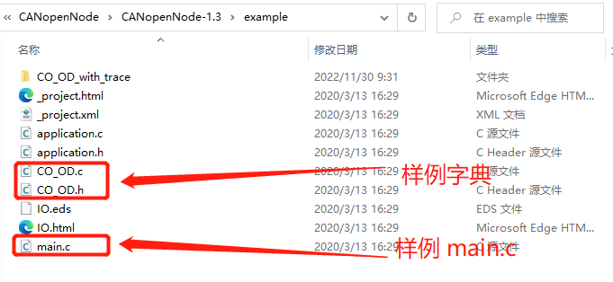
关键对象字典项说明¶
在当前工程中，以下参数最常改：
/*2101*/：节点 ID（OD_CANNodeID）/*2102*/：CAN 波特率（OD_CANBitRate，单位 kbps）/*1017*/：Heartbeat 生产周期（ms）
CANopen_Basic 默认值：
- Node ID =
0x0A - Bitrate =
0x1F4(=500 kbps) - Heartbeat =
0x03E8(=1000 ms)
在 CO_OD.h 中定义的关键配置项：
/* ==========================================================================
* 通信参数区域
* ========================================================================== */
/**
* @brief CAN Node ID (索引 0x2101)
* @note 设备在CANopen网络中的唯一地址
* 范围：1-127 (0保留用于广播)
*/
#define OD_CANNodeID CO_OD_ROM.CANNodeID
/* 默认值：0x0A (10) */
/**
* @brief CAN波特率 (索引 0x2102)
* @note 单位：kbps
* 支持：10, 20, 50, 125, 250, 500, 800, 1000
*/
#define OD_CANBitRate CO_OD_ROM.CANBitRate
/* 默认值：500 (kbps) */
/**
* @brief 生产者心跳时间 (索引 0x1017)
* @note 单位：ms
* 0 = 关闭心跳
*/
#define OD_producerHeartbeatTime CO_OD_ROM.producerHeartbeatTime
/* 默认值：1000 (ms) */
/**
* @brief 消费者心跳时间数组 (索引 0x1016)
* @note 用于监控其他节点的在线状态
*/
#define OD_consumerHeartbeatTime CO_OD_ROM.consumerHeartbeatTime
/* ==========================================================================
* 设备信息区域 (索引 0x1000-0x1018)
* ========================================================================== */
/**
* @brief 设备类型 (索引 0x1000)
* @note 指示设备的功能类型
*/
#define OD_deviceType CO_OD_ROM.deviceType
/**
* @brief 设备名称 (索引 0x1008)
*/
#define OD_manufacturerDeviceName CO_OD_ROM.manufacturerDeviceName
/**
* @brief 硬件版本 (索引 0x1009)
*/
#define OD_manufacturerHardwareVersion CO_OD_ROM.manufacturerHardwareVersion
/**
* @brief 软件版本 (索引 0x100A)
*/
#define OD_manufacturerSoftwareVersion CO_OD_ROM.manufacturerSoftwareVersion
/**
* @brief 设备身份标识 (索引 0x1018)
* @note 包含VendorID、ProductCode、RevisionNumber、SerialNumber
*/
#define OD_identity CO_OD_ROM.identity
/* ==========================================================================
* PDO配置区域
* ========================================================================== */
/**
* @brief RPDO通信参数 (索引 0x1400-0x1403)
* @note 4个接收PDO的配置
*/
#define OD_RPDOCommunicationParameter CO_OD_ROM.RPDOCommunicationParameter
/**
* @brief RPDO映射参数 (索引 0x1600-0x1603)
* @note 定义RPDO映射到OD的条目
*/
#define OD_RPDOMappingParameter CO_OD_ROM.RPDOMappingParameter
/**
* @brief TPDO通信参数 (索引 0x1800-0x1803)
* @note 4个发送PDO的配置
*/
#define OD_TPDOCommunicationParameter CO_OD_ROM.TPDOCommunicationParameter
/**
* @brief TPDO映射参数 (索引 0x1A00-0x1A03)
* @note 定义OD条目映射到TPDO
*/
#define OD_TPDOMappingParameter CO_OD_ROM.TPDOMappingParameter
/* ==========================================================================
* 制造商特定区域 (索引 0x2000-0x5FFF)
* ========================================================================== */
/**
* @brief 上电计数器 (索引 0x2106)
* @note 记录设备上电次数，存储在EEPROM区域
*/
#define OD_powerOnCounter CO_OD_EEPROM.powerOnCounter
/**
* @brief 状态位 (索引 0x2100)
* @note 设备错误状态位
*/
#define OD_errorStatusBits CO_OD_RAM.errorStatusBits
默认配置值¶
在 CO_OD.c 中的默认配置：
/* ROM区域 - 只读或配置参数 */
const struct sCO_OD_ROM CO_OD_ROM = {
.FirstWord = 0x55,
/* 设备类型 */
.deviceType = 0x00000000,
/* SYNC报文COB-ID */
.COB_ID_SYNCMessage = 0x00000080,
/* 通信周期 */
.communicationCyclePeriod = 0,
/* EMCY报文COB-ID */
.COB_ID_EMCY = 0x00000080,
/* 心跳生产者时间 (ms) */
.producerHeartbeatTime = 1000,
/* 设备身份信息 */
.identity = {
.maxSubIndex = 4,
.vendorID = 0x00000000,
.productCode = 0x00000000,
.revisionNumber = 0x00000000,
.serialNumber = 0x00000000,
},
/* CAN Node ID */
.CANNodeID = 0x0A, /* 默认节点地址10 */
/* CAN波特率 (kbps) */
.CANBitRate = 500, /* 默认500kbps */
/* NMT启动行为 */
.NMTStartup = 0x00000008, /* 上电后自启动进入Operational */
.LastWord = 0x55,
};
说明：当前仓库 CANopen_Basic 示例中，NMTStartup 默认值也是 0x00000008。
对象字典编辑器¶
对象字典可以使用官方工具编辑：
- 对象字典编辑器：https://github.com/robincornelius/libedssharp
- 编辑后生成
CO_OD.c,CO_OD.h,IO.eds文件
主程序实现¶
main.c¶
/**
* @file main.c
* @brief 程序主入口
*/
#include "platform.h"
#include "canopen_basic.h"
/**
* @brief 主函数
* @return 程序不应返回
*/
int main(void)
{
/* 平台初始化
* - 系统时钟配置
* - GPIO初始化
* - UART调试输出
* - LED初始化
*/
PLATFORM_Init();
/* 进入主循环，运行CANopen应用 */
while (1)
{
CANopen_Basic_Sample();
}
}
平台初始化（platform.c）¶
可从 mm32f5370\Samples\LibSamples\FlexCAN\FlexCAN_Interrupt 中复制 platform.c/.h 文件直接复用即可
/**
* @file platform.c
* @brief 平台初始化实现
*/
#include <stdio.h>
#include "platform.h"
/* 延迟计数器 */
volatile uint32_t PLATFORM_DelayTick = 0;
/**
* @brief 初始化SysTick用于延迟函数
* @note 配置为1ms中断
*/
void PLATFORM_InitDelay(void)
{
RCC_ClocksTypeDef RCC_Clocks;
RCC_GetClocksFreq(&RCC_Clocks);
if (SysTick_Config(RCC_Clocks.HCLK_Frequency / 1000))
{
while (1); /* 配置失败 */
}
NVIC_SetPriority(SysTick_IRQn, 0x0);
}
/**
* @brief 毫秒延迟
* @param Millisecond 延迟时间（毫秒）
*/
void PLATFORM_DelayMS(uint32_t Millisecond)
{
PLATFORM_DelayTick = Millisecond;
while (0 != PLATFORM_DelayTick)
{
}
}
/**
* @brief 初始化LED GPIO
* @note EVB-F5375开发板：PE2-PE5连接4个LED
*/
void PLATFORM_InitLED(void)
{
GPIO_InitTypeDef GPIO_InitStruct;
RCC_AHBPeriphClockCmd(RCC_AHBPeriph_GPIOE, ENABLE);
GPIO_StructInit(&GPIO_InitStruct);
GPIO_InitStruct.GPIO_Pin = GPIO_Pin_2 | GPIO_Pin_3 | GPIO_Pin_4 | GPIO_Pin_5;
GPIO_InitStruct.GPIO_Speed = GPIO_Speed_High;
GPIO_InitStruct.GPIO_Mode = GPIO_Mode_Out_PP;
GPIO_Init(GPIOE, &GPIO_InitStruct);
/* 初始关闭所有LED（低电平点亮） */
PLATFORM_LED_Enable(LED1, DISABLE);
PLATFORM_LED_Enable(LED2, DISABLE);
PLATFORM_LED_Enable(LED3, DISABLE);
PLATFORM_LED_Enable(LED4, DISABLE);
}
/**
* @brief 初始化 console 用于 printf
* @param Baudrate UART2 通信波特率
* @retval none
* @note none
*/
void PLATFORM_InitConsole(uint32_t Baudrate)
{
GPIO_InitTypeDef GPIO_InitStruct;
USART_InitTypeDef USART_InitStruct;
RCC_APB2PeriphClockCmd(RCC_APB2Periph_USART1, ENABLE);
USART_StructInit(&USART_InitStruct);
USART_InitStruct.USART_BaudRate = Baudrate;
USART_InitStruct.USART_StopBits = USART_StopBits_1;
USART_InitStruct.USART_Parity = USART_Parity_No;
USART_InitStruct.USART_Mode = USART_Mode_Rx | USART_Mode_Tx;
USART_Init(USART1, &USART_InitStruct);
RCC_AHBPeriphClockCmd(RCC_AHBPeriph_GPIOB, ENABLE);
GPIO_PinAFConfig(GPIOB, GPIO_PinSource6, GPIO_AF_7);
GPIO_StructInit(&GPIO_InitStruct);
GPIO_InitStruct.GPIO_Pin = GPIO_Pin_6;
GPIO_InitStruct.GPIO_Speed = GPIO_Speed_High;
GPIO_InitStruct.GPIO_Mode = GPIO_Mode_AF_PP;
GPIO_Init(GPIOB, &GPIO_InitStruct);
USART_Cmd(USART1, ENABLE);
}
#if defined (__ICCARM__)
#if (__VER__ >= 9030001)
/* Files include */
#include <stddef.h>
#include <LowLevelIOInterface.h>
/**
* @brief 重新定义 __write 函数
* @param handle 文件句柄
* @param buf 数据缓冲区
* @param bufSize 缓冲区大小
* @retval nChars 写入字符数
* @note 用于 printf 输出
*/
size_t __write(int handle, const unsigned char *buf, size_t bufSize)
{
size_t nChars = 0;
/* Check for the command to flush all handles */
if (-1 == handle)
{
return (0);
}
/* Check for stdout and stderr (only necessary if FILE descriptors are enabled.) */
if ((_LLIO_STDOUT != handle) && (_LLIO_STDERR != handle))
{
return (-1);
}
for (/* Empty */; bufSize > 0; --bufSize)
{
USART_SendData(USART1, (uint8_t)(*buf));
while (RESET == USART_GetFlagStatus(USART1, USART_FLAG_TC))
{
}
++buf;
++nChars;
}
return (nChars);
}
#else
/**
* @brief 重新定义 fputc 函数
* @param ch 输出字符
* @param f 文件指针
* @retval ch 输出字符
* @note 用于 printf 输出
*/
int fputc(int ch, FILE *f)
{
USART_SendData(USART1, (uint8_t)ch);
while (RESET == USART_GetFlagStatus(USART1, USART_FLAG_TC))
{
}
return (ch);
}
#endif
#elif defined (__GNUC__)
/**
* @brief 重新定义 fputc 函数
* @param ch 输出字符
* @param f 文件指针
* @retval ch 输出字符
* @note 用于 printf 输出
*/
int fputc(int ch, FILE *f)
{
USART_SendData(USART1, (uint8_t)ch);
while (RESET == USART_GetFlagStatus(USART1, USART_FLAG_TC))
{
}
return (ch);
}
#else
/**
* @brief 重新定义 fputc 函数
* @param ch 输出字符
* @param f 文件指针
* @retval ch 输出字符
* @note 用于 printf 输出
*/
int fputc(int ch, FILE *f)
{
USART_SendData(USART1, (uint8_t)ch);
while (RESET == USART_GetFlagStatus(USART1, USART_FLAG_TC))
{
}
return (ch);
}
#endif
/**
* @brief 控制LED开关
* @param LEDn LED编号
* @param State ENABLE/DISABLE
*/
void PLATFORM_LED_Enable(LEDn_TypeDef LEDn, FunctionalState State)
{
switch (LEDn)
{
case LED1:
GPIO_WriteBit(GPIOE, GPIO_Pin_2, (ENABLE == State) ? Bit_RESET : Bit_SET);
break;
case LED2:
GPIO_WriteBit(GPIOE, GPIO_Pin_3, (ENABLE == State) ? Bit_RESET : Bit_SET);
break;
case LED3:
GPIO_WriteBit(GPIOE, GPIO_Pin_4, (ENABLE == State) ? Bit_RESET : Bit_SET);
break;
case LED4:
GPIO_WriteBit(GPIOE, GPIO_Pin_5, (ENABLE == State) ? Bit_RESET : Bit_SET);
break;
default:
break;
}
}
/**
* @brief
* @param None
* @param State ENABLE/DISABLE
*/
void PLATFORM_PrintInfo(void)
{
RCC_ClocksTypeDef RCC_Clocks;
printf("\r\nBOARD : EVB-F5375");
printf("\r\nMCU : MM32F5375G8PV");
printf("\r\n");
switch (RCC->CFGR & RCC_CFGR_SWS_Msk)
{
case 0x00:
printf("\r\nHSI used as system clock source");
break;
case 0x04:
printf("\r\nHSE used as system clock source");
break;
case 0x08:
if (RCC->PLL1CFGR & RCC_PLL1CFGR_PLL1SRC_Msk)
{
printf("\r\nPLL (clocked by HSE) used as system clock source");
}
else
{
printf("\r\nPLL (clocked by HSI) used as system clock source");
}
break;
case 0x0C:
printf("\r\nLSI used as system clock source");
break;
default:
break;
}
RCC_GetClocksFreq(&RCC_Clocks);
printf("\r\n");
printf("\r\nSYSCLK Frequency : %7.3f MHz", (double)RCC_Clocks.SYSCLK_Frequency / (double)1000000.0);
printf("\r\nHCLK Frequency : %7.3f MHz", (double)RCC_Clocks.HCLK_Frequency / (double)1000000.0);
printf("\r\nPCLK1 Frequency : %7.3f MHz", (double)RCC_Clocks.PCLK1_Frequency / (double)1000000.0);
printf("\r\nPCLK2 Frequency : %7.3f MHz", (double)RCC_Clocks.PCLK2_Frequency / (double)1000000.0);
printf("\r\n");
}
/**
* @brief 平台统一初始化入口
*/
void PLATFORM_Init(void)
{
PLATFORM_InitDelay();
PLATFORM_InitConsole(115200);
PLATFORM_InitLED();
PLATFORM_PrintInfo();
}
应用实现(canopen_basic.c)¶
这里将协议栈 CANopenNode-1.3\example 中的 main.c 文件复制到 CANopenNode\Demos\CANopen_Basic文件夹下用于实现 canopen_basic.c
CANopen 初始化顺序
CO_init(&canBase, OD_CANNodeID, OD_CANBitRate)app_tim_init()CO_CANsetNormalMode(CO->CANmodule[0])TIM_Cmd(TIM1, ENABLE)- 主循环
CO_process
/**
* @file canopen_basic.c
* @brief CANopen基础应用实现
*/
#include <stdio.h>
#include "platform.h"
#include "CANopen.h"
/* ===================== 定时器配置宏 ===================== */
#define APP_TIM_UPDATE_STEP 1000000U /**< 定时器计数频率 1MHz */
#define APP_TIM_UPDATE_PERIOD 1000U /**< 定时周期 1000us = 1ms */
#define TMR_TASK_INTERVAL (1000U) /**< 任务间隔 1000us */
#define INCREMENT_1MS(var) (var++) /**< 毫秒计数递增宏 */
/* ===================== 全局变量 ===================== */
/**
* @brief 全局1ms计数器
* @note 在定时器中断中递增，主循环中读取
*/
volatile uint32_t CO_timer1ms = 0U;
/**
* @brief 用户自定义CAN基础结构体
* @note 传递给CO_init的参数
*/
struct CANbase {
uintptr_t baseAddress; /**< CAN模块基地址 */
};
/* 外部声明FlexCAN句柄 */
EXTERN flexcan_handle_t FlexCAN_Handle;
/* 函数声明 */
void app_tim_init(void);
void tmrTask_thread(void);
/* ===================== 主函数 ===================== */
/**
* @brief CANopen基础示例主函数
* @return 0 正常退出
*
* @note 执行流程：
* 1. 初始化CANopen协议栈
* 2. 配置并启动1ms定时器
* 3. 进入主循环处理CANopen状态机
* 4. 处理NMT复位命令
*/
int CANopen_Basic_Sample(void)
{
CO_NMT_reset_cmd_t reset = CO_RESET_NOT;
/* 增加上电计数器（存储在EEPROM区域，当前为RAM） */
OD_powerOnCounter++;
while(reset != CO_RESET_APP)
{
CO_ReturnError_t err;
uint16_t timer1msPrevious;
/* CAN基础结构体 */
struct CANbase canBase = {
.baseAddress = 0u,
};
/* ========== Step 1: 初始化CANopen协议栈 ========== */
err = CO_init(&canBase, OD_CANNodeID, OD_CANBitRate);
if(err != CO_ERROR_NO){
/* 初始化失败，进入死循环 */
while(1);
}
/* ========== Step 2: 初始化1ms定时器 ========== */
app_tim_init();
/* ========== Step 3: 启动CAN正常模式 ========== */
CO_CANsetNormalMode(CO->CANmodule[0]);
reset = CO_RESET_NOT;
timer1msPrevious = CO_timer1ms;
/* 启动定时器 */
TIM_Cmd(TIM1, ENABLE);
/* ========== Step 4: 主循环 ========== */
while(reset == CO_RESET_NOT)
{
uint16_t timer1msCopy, timer1msDiff;
/* 计算时间差 */
timer1msCopy = CO_timer1ms;
timer1msDiff = timer1msCopy - timer1msPrevious;
timer1msPrevious = timer1msCopy;
/* CANopen主处理函数 */
reset = CO_process(CO, timer1msDiff, NULL);
/* 用户应用代码可以放在这里 */
/* 例如：读取传感器、控制执行器等 */
}
}
/* 清理CANopen资源 */
CO_delete(CO);
return 0;
}
/* ===================== 定时器相关函数 ===================== */
/**
* @brief 1ms定时任务
* @note 在TIM1中断中每1ms调用一次
*
* @details 处理内容：
* 1. 递增全局毫秒计数器
* 2. 处理SYNC同步报文
* 3. 处理RPDO（接收过程数据）
* 4. 处理TPDO（发送过程数据）
* 5. 检查定时器溢出错误
*/
void tmrTask_thread(void)
{
INCREMENT_1MS(CO_timer1ms);
/* 仅在CAN正常模式下处理 */
if (CO->CANmodule[0]->CANnormal) {
bool_t syncWas;
/* 处理SYNC同步报文 */
syncWas = CO_process_SYNC(CO, TMR_TASK_INTERVAL);
/* 读取RPDO输入数据 */
CO_process_RPDO(CO, syncWas);
/* 用户输入处理代码可以放在这里 */
/* 写入TPDO输出数据 */
CO_process_TPDO(CO, syncWas, TMR_TASK_INTERVAL);
/* 检查定时器溢出（如果主循环执行时间超过1ms） */
if((TIM_GetITStatus(TIM1, TIM_IT_Update) & TIM_IT_Update) != 0u) {
CO_errorReport(CO->em, CO_EM_ISR_TIMER_OVERFLOW,
CO_EMC_SOFTWARE_INTERNAL, 0u);
TIM_ClearITPendingBit(TIM1, TIM_IT_Update);
}
}
}
/**
* @brief 初始化TIM1作为1ms定时器
* @note 使用向上计数模式，1MHz计数频率，1000计数周期 = 1ms
*
* @details 计算公式：
* 定时周期 = (Prescaler + 1) * (Period + 1) / PCLK2
* 1ms = (PCLK2/1MHz - 1 + 1) * (1000 - 1 + 1) / PCLK2
* = (PCLK2/1MHz) * 1000 / PCLK2
* = 1ms
*/
void app_tim_init(void)
{
NVIC_InitTypeDef NVIC_InitStruct;
TIM_TimeBaseInitTypeDef TIM_TimeBaseInitStruct;
RCC_ClocksTypeDef RCC_Clocks;
/* 获取系统时钟 */
RCC_GetClocksFreq(&RCC_Clocks);
/* 使能TIM1时钟（TIM1在APB2上） */
RCC_APB2PeriphClockCmd(RCC_APB2Periph_TIM1, ENABLE);
/* 配置定时器参数 */
TIM_TimeBaseStructInit(&TIM_TimeBaseInitStruct);
/* 预分频器：将PCLK2分频到1MHz */
TIM_TimeBaseInitStruct.TIM_Prescaler =
(RCC_Clocks.PCLK2_Frequency / APP_TIM_UPDATE_STEP - 1);
/* 向上计数模式 */
TIM_TimeBaseInitStruct.TIM_CounterMode = TIM_CounterMode_Up;
/* 周期：1000个计数 = 1ms */
TIM_TimeBaseInitStruct.TIM_Period = (APP_TIM_UPDATE_PERIOD - 1);
/* 时钟分频：不分频 */
TIM_TimeBaseInitStruct.TIM_ClockDivision = TIM_CKD_Div1;
/* 重复计数器：不使用 */
TIM_TimeBaseInitStruct.TIM_RepetitionCounter = 0;
/* 应用配置 */
TIM_TimeBaseInit(TIM1, &TIM_TimeBaseInitStruct);
/* 清除更新中断标志 */
TIM1->SR &= ~TIM_IT_Update;
/* 使能更新中断 */
TIM_ITConfig(TIM1, TIM_IT_Update, ENABLE);
/* 配置中断优先级 */
NVIC_InitStruct.NVIC_IRQChannel = TIM1_UP_IRQn;
NVIC_InitStruct.NVIC_IRQChannelPreemptionPriority = 0; /* 高优先级（示例与FlexCAN同级） */
NVIC_InitStruct.NVIC_IRQChannelSubPriority = 0;
NVIC_InitStruct.NVIC_IRQChannelCmd = ENABLE;
NVIC_Init(&NVIC_InitStruct);
}
/* ===================== 中断服务程序 ===================== */
/**
* @brief FlexCAN中断服务程序
* @note 在接收或发送完成时触发
*
* @details 执行流程：
* 1. 调用HAL层处理中断
* 2. 调用CANopen中断处理函数
* 3. 数据同步屏障
*/
void FLEXCAN1_IRQHandler(void)
{
/* 先调用HAL层中断处理 */
FLEXCAN_TransferHandleIRQ(FLEXCAN1, &FlexCAN_Handle);
/* 调用CANopen中断处理（处理接收/发送完成） */
CO_CANinterrupt(CO->CANmodule[0]);
/* 数据同步屏障，确保中断处理完成 */
__DSB();
}
/**
* @brief TIM1更新中断
* @note 每1ms触发一次
*/
void TIM1_UP_IRQHandler(void)
{
/* 清除中断标志（必须在处理前清除，避免错过下一次中断） */
TIM_ClearITPendingBit(TIM1, TIM_IT_Update);
/* 调用定时任务 */
tmrTask_thread();
}
编译与烧录¶
Keil编译步骤¶
- 打开工程：
CANopen_Basic/MDK-ARM/CANopen_Basic.uvprojx - 选择目标：
Project → Options for Target 'Target 1' - 配置输出：
- Output选项卡：勾选 Create HEX File
- Debug选项卡：选择对应的调试器（J-Link/MM32-Link）
- 编译：按 F7 或点击 Build 按钮
- 烧录：按 F8 或点击 Download 按钮
编译常见问题¶
| 问题现象 | 原因 | 解决方法 |
|---|---|---|
undefined reference to 'FLEXCAN_Transfer...' |
HAL库未添加 | 添加 hal_flexcan.c 到工程 |
CO_OD.c: multiple definition |
CO_OD.c 被重复加入编译/链接 |
在工程中仅保留一份 CO_OD.c，并检查是否重复链接目标文件或静态库 |
cannot open source input file |
头文件路径错误 | 检查 Include Paths |
功能验证与测试¶
验证前提条件¶
- 工程已编译并烧录
- MCU 上电复位
- CAN 总线连接正确且终端电阻完整（两端各120Ω）
- PCAN 通道波特率与节点一致（500 kbps）
- Node ID配置正确（0x0A = 10）
节点上线与心跳测试¶
预期结果：上电后自动发送 Boot-up 报文，然后周期性发送心跳报文。
| 测试项 | CAN ID (hex) | DLC | Data (hex) | 说明 |
|---|---|---|---|---|
| Boot-up | 0x70A |
1 | 00 |
节点10上线，状态=0 |
| Heartbeat | 0x70A |
1 | 05 |
Operational状态 |
| Heartbeat | 0x70A |
1 | 7F |
Pre-operational状态 |
| Heartbeat | 0x70A |
1 | 04 |
Stopped状态 |
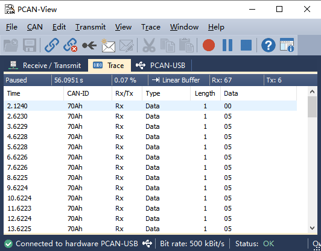
心跳数据字节状态定义：
0x00= Boot-up0x04= Stopped0x05= Operational0x7F= Pre-operational
NMT 模式切换命令测试¶
目标节点：Node-ID = 0x0A
| 场景 | CAN-ID | DLC | Data(hex) | 预期响应 |
|---|---|---|---|---|
| NMT Stop | 0x000 |
2 | 02 0A |
继续发送心跳，状态变为Stopped(0x04) |
| NMT Start | 0x000 |
2 | 01 0A |
心跳恢复，状态变为Operational |
| NMT Pre-operational | 0x000 |
2 | 80 0A |
状态变为Pre-operational |
| NMT Reset Node | 0x000 |
2 | 81 0A |
节点复位，重新上线 |
| NMT Reset Communication | 0x000 |
2 | 82 0A |
通信复位，重新初始化CAN |
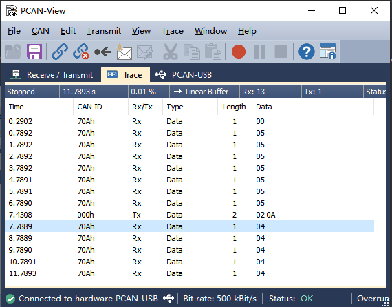
NMT Stop 响应
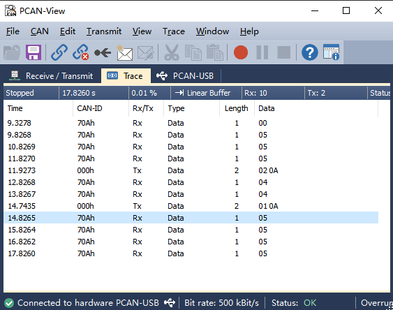
NMT Start 响应
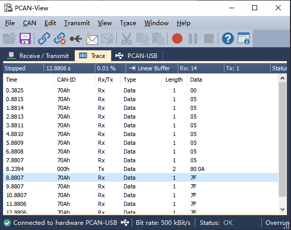
NMT Pre-operational 响应
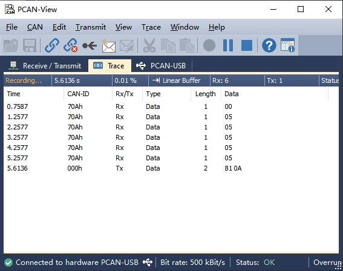
NMT Reset Node 响应
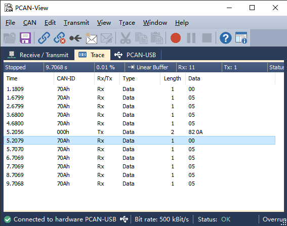
NMT Reset Communication 响应
SDO 通信测试¶
SDO用于读写对象字典参数。
测试1：读取心跳周期（对象 0x1017）
| 方向 | CAN-ID | DLC | Data(hex) | 说明 |
|---|---|---|---|---|
| 请求 | 0x60A |
8 | 40 17 10 00 00 00 00 00 |
SDO上传请求，索引0x1017，子索引0x00 |
| 响应 | 0x58A |
8 | 4B 17 10 00 E8 03 00 00 |
响应：0x03E8 = 1000ms |
SDO请求格式解析：
Byte0: 0x40 = 上传请求命令
Byte1-2: 0x17 0x10 = 索引0x1017 (小端)
Byte3: 0x00 = 子索引0
Byte4-7: 0x00 = 保留
SDO响应格式解析：
Byte0: 0x4B = 上传响应，2字节数据
Byte1-2: 0x17 0x10 = 索引0x1017
Byte3: 0x00 = 子索引0
Byte4-5: 0xE8 0x03 = 数据0x03E8 = 1000ms (小端)
Byte6-7: 0x00 = 保留
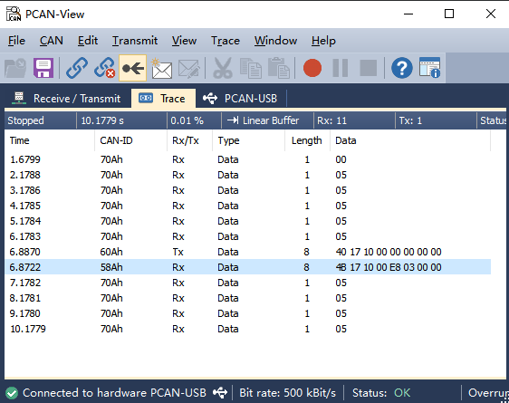
读取心跳周期响应
测试2：设置心跳周期为 500ms
| 方向 | CAN-ID | DLC | Data(hex) | 说明 |
|---|---|---|---|---|
| 请求 | 0x60A |
8 | 2B 17 10 00 F4 01 00 00 |
SDO下载请求，数据0x01F4=500ms |
| 响应 | 0x58A |
8 | 60 17 10 00 00 00 00 00 |
下载确认 |
SDO下载请求格式：
Byte0: 0x2B = 下载请求，2字节数据
Byte1-2: 0x17 0x10 = 索引0x1017
Byte3: 0x00 = 子索引0
Byte4-5: 0xF4 0x01 = 数据0x01F4 = 500ms
Byte6-7: 0x00 = 保留
设置成功后，心跳间隔应立即变为500ms。
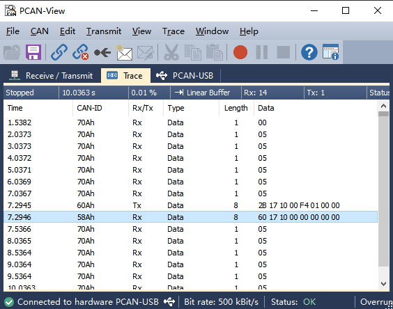
设置心跳周期响应
常见问题排查¶
无上线报文或无心跳¶
| 可能原因 | 检查方法 | 解决方法 |
|---|---|---|
| 1ms定时中断未运行 | 用示波器测量TIM1中断触发 | 检查TIM1配置，确保中断使能 |
FLEXCAN1_IRQHandler()未调用 |
在中断函数中设置断点 | 检查启动文件中断向量表 |
未执行CO_CANsetNormalMode() |
调试观察CANnormal标志 |
确保在CO_init后调用 |
| 波特率不一致 | PCAN-View显示总线错误 | 检查OD_CANBitRate和PCAN设置 |
| 终端电阻缺失 | 测量CAN_H和CAN_L之间电阻 | 添加120Ω终端电阻 |
收不到任何报文¶
| 可能原因 | 检查方法 | 解决方法 |
|---|---|---|
| CAN引脚复用配置错误 | 检查PD8/PD9复用设置 | 配置为GPIO_AF_25 |
| 收发器电源/使能异常 | 测量收发器供电电压 | 确保3.3V供电正常 |
| 总线无120欧终端电阻 | 测量CAN总线差分电阻 | 总线两端各加120Ω |
| Rx MB配置错误 | 调试观察FlexCAN_RxMB_ConfigStruct |
检查MB索引和掩码设置 |
| 中断优先级问题 | 检查NVIC配置 | 确保FlexCAN中断已使能 |
NMT指令无响应¶
| 可能原因 | 检查方法 | 解决方法 |
|---|---|---|
| NMT报文CAN-ID不是0x000 | PCAN-View检查发送ID | 确认使用0x000 |
| 命令字或Node-ID错误 | 检查Data字节 | Data[0]=命令, Data[1]=NodeID |
| 节点未进入正常通信状态 | 观察心跳状态 | 确保不是Bus Off或初始化失败 |
| 接收中断未触发 | 在CO_CANinterrupt打断点 |
检查中断使能和回调函数 |
发送偶发溢出¶
| 可能原因 | 检查方法 | 解决方法 |
|---|---|---|
CO_CANsend()中缓冲区堆积 |
观察CANtxCount变量 |
增加发送MB或使用FIFO |
| Tx完成中断未清标志 | 检查IFLAG1寄存器 |
确保清除中断标志 |
| 中断优先级不够 | 检查NVIC优先级设置 | 提高FlexCAN中断优先级 |
| 总线负载过高 | PCAN-View观察总线利用率 | 降低PDO发送频率 |
调试技巧¶
- LED指示法：在不同阶段点亮不同LED，指示程序执行位置
- 串口打印：使用UART输出调试信息（注意：中断中不要使用printf）
- 逻辑分析仪：抓取CAN波形，分析时序问题
- 断点调试：在关键位置设置断点，检查变量值
参考资料¶
官方资源¶
| 资源 | 链接 |
|---|---|
| CANopenNode 项目主页 | https://github.com/CANopenNode/CANopenNode |
| CANopenNode v1.3 发布页 | https://github.com/CANopenNode/CANopenNode/releases/tag/v1.3 |
| CANopen 协议规范 (CiA 301) | https://www.can-cia.org/can-knowledge/canopen/ |
| EVB-F5375 开发板资料 | https://www.mindmotion.com.cn/support/development_tools/evaluation_boards/evboard/mm32f5375g8pv/ |
推荐书籍¶
- 《CANopen轻松入门》—— 周立功